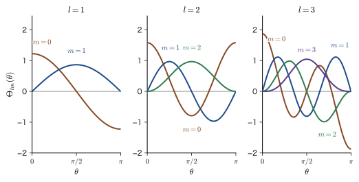
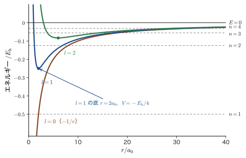
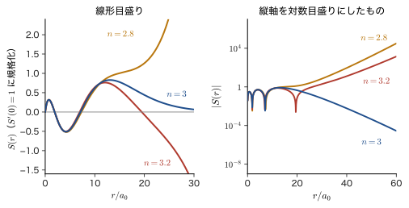
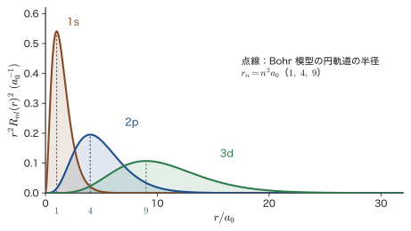
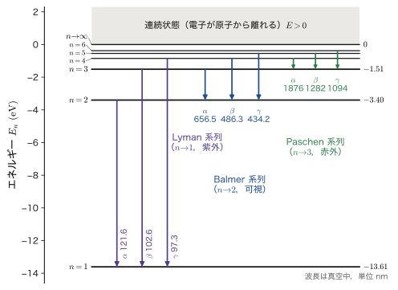

第15章水素原子（1）— Schrödinger 方程式を解く
水素原子は，陽子 1 個の原子核と電子 1 個だけからできた，もっとも単純な原子である．そして，Schrödinger（シュレーディンガー）方程式を紙と鉛筆だけで厳密に解くことのできる，ほとんど唯一の「本物の原子」でもある．この章で得られる結果——エネルギー準位 $E_n=-13.6\ \mathrm{eV}/n^2$，3 つの量子数 $n,l,m$，s・p・d・f 軌道，K 殻・L 殻という呼び名——は，のちに扱うヘリウム原子（第29章，第31章），多電子原子（第34章），分子軌道（第39章），遷移金属イオンの 3d 電子（第43章）のすべての出発点になる．材料科学でも，半導体の励起子やドナー準位の大きさと束縛エネルギーを，水素原子の解を少し読み替えるだけで見積もることができる（15.1 節）．
方程式を解く道筋は，前の 2 つの章で見た道具の組み合わせである．(1) ポテンシャル $-e_0^2/(4\pi\varepsilon_0 r)$ は $r$ だけの関数（球対称）なので，第14章のように球座標で変数分離して 3 本の常微分方程式にほどく．(2) 方位角 $\varphi$ の方程式は周期条件から，天頂角 $\theta$ の方程式は $\theta=0,\pi$ での有界性から，それぞれ整数の量子数 $m$，$l$ を生む．(3) 動径 $r$ の方程式は，調和振動子（第13章）とまったく同じ論法——べき級数解が打ち切られなければ無限遠で発散する——から，量子数 $n$ とエネルギー $E_n$ を生む．3 つの量子数は，3 つの方程式の 3 つの境界条件から出てくるのである．
古典物理との違いも確認しておこう．惑星の運動（AD 03「大学基礎物理学」第8章 8.4）では，同じ $-1/r$ 型のポテンシャルの中で，全エネルギーが負なら軌道は楕円になり，エネルギーは連続的にどんな値でもとれた．量子力学では，エネルギーは $-13.6/n^2\ \mathrm{eV}$ というとびとびの値だけになり，電子は軌道の上を走る点ではなく，オービタル（軌道関数）とよばれる確率の雲として広がる．Bohr 模型（第5章 5.3）が「仮定」として与えたエネルギー準位を，この章では Schrödinger 方程式から「導く」．Bohr 模型との一致と違いも 15.6 節で調べる．
- 水素原子の 2 体問題を換算質量を使って 1 体問題に直し，重水素・ポジトロニウム・ミューオン水素・半導体の励起子やドナーなどの水素型の系へ拡張できること
- 球座標で変数分離して $R(r)$，$\Theta(\theta)$，$\Phi(\varphi)$ の 3 本の常微分方程式を導き，分離定数 $l(l+1)$ と $m^2$ を置く理由を説明できること
- 方位角の周期条件から $\Phi=e^{im\varphi}/\sqrt{2\pi}$，$m=0,\pm1,\pm2,\dots$ を，天頂角の有界性から陪 Legendre 関数 $P_l^m(\cos\theta)$ と $l=0,1,2,\dots$，$\lvert m\rvert\le l$ を導けること
- 動径方程式を $R=S/r$，$S=Xe^{-\kappa r}$，$\rho=2\kappa r$ と書き換えて Frobenius の級数で解き，級数の打ち切りから主量子数 $n$ とエネルギー準位 $E_n$ を導けること
- $E_n$ の $h$ 形と $\hbar$ 形，縮退度 $n^2$，Bohr 模型との対応，スペクトル系列，Moseley 則を数値つきで説明できること
- Laguerre 陪多項式の 2 つの規約の関係と規格化定数を理解し，$R_{nl}(r)$ の標準形（原点で正）を書き下せること
もとにしたノート：望月泰英『物理学ノート 量子力学2』 pp. 41–45（p. 45 は上半分．下半分以降は第16章）と，同じ内容を別の順序で書いた紙面．
15.1 水素原子の問題 — 2 体問題から 1 体問題へ
15.1.1 問題の設定
水素原子の原子核は陽子 1 個で，その質量 $m_{\mathrm p}$ は電子の質量 $m_{\mathrm e}$ の約 1836 倍もある．そこでまず，陽子を原点に静止した「力の中心」とみなし，そのまわりを運動する電子だけを考えよう（陽子が動く効果は 15.1.2 節で取り込む）．陽子の電荷は $+e_0$，電子の電荷は $-e_0$ である．陽子からの距離が $r$ の位置にある電子がもつ静電ポテンシャルエネルギーは，Coulomb（クーロン）の法則（大学基礎物理学 第35章 35.1）より，
\begin{equation} V(r)=-\frac{1}{4\pi\varepsilon_0}\frac{e_0^2}{r} \label{eq:15-V} \end{equation}である．$\varepsilon_0$ は真空の誘電率，$e_0=1.602\times10^{-19}\ \mathrm{C}$ は電気素量である．重力が作る惑星のポテンシャル $-GMm/r$ と同じ $-1/r$ の形をしており，引力は原点に近づくほど強くなる．電子が陽子に束縛されて水素原子ができる．
定義15.1 水素原子の Schrödinger 方程式
ポテンシャル \eqref{eq:15-V} の中の電子（質量 $m_{\mathrm e}$）の定常状態を表す波動関数 $\psi(r,\theta,\varphi)$ とエネルギー $E$ を，時間を含まない Schrödinger 方程式
\begin{equation} -\frac{\hbar^2}{2m_{\mathrm e}}\nabla^2\psi-\frac{1}{4\pi\varepsilon_0}\frac{e_0^2}{r}\,\psi=E\psi \label{eq:15-H} \end{equation}と，次の境界条件から決めることを，水素原子の問題という．
- $\psi$ は空間の各点で 1 つの値をとる：$\psi(r,\theta,\varphi+2\pi)=\psi(r,\theta,\varphi)$．
- $z$ 軸上（$\theta=0$ と $\theta=\pi$）で $\psi$ は有限である．
- 原点 $r=0$ で $\psi$ は有限であり，$r\to\infty$ で $\psi\to0$ となって $\displaystyle\int\abs{\psi}^2\dd V=1$ と規格化できる（束縛状態）．
境界条件が 3 つあることが，量子数が 3 つ現れることの原因になる（15.7 節の表15.4）．1 つ目は，$\varphi$ と $\varphi+2\pi$ が空間の同じ点を表すので，そこでの波動関数の値が食い違っては困る，という当然の要請である．2 つ目の $z$ 軸上は，$\varphi$ が決まらない（$\varphi$ をどう変えても同じ点になる）特別な点で，そこでの波動関数が無限大になってはいけない．3 つ目は，確率解釈（第8章 8.1）から，電子がどこかに見いだされる確率が $1$ でなければならないことによる．
記号の断り：$e_0$，$a_0$，$\hbar$ と $h$，量子数の始まり
電気素量：第1章で断ったとおり，電気素量は $e_0$（$\gt 0$，電子の電荷は $-e_0$）と書き，$e$ はネイピア数だけに使う．Bohr 半径：$a_0=\dfrac{4\pi\varepsilon_0\hbar^2}{m_{\mathrm e}e_0^2}=5.291\,772\,109\times10^{-11}\ \mathrm{m}$ を本書では $a_0$ と書く．関連シミュレーター（hydrogen，variational，perturbation）では $a_{\mathrm B}$ と書かれているが，同じ量である．AD 02 第48章では，級数の係数にも $a_0$ を使ったので，Bohr 半径は $a_0^{(\mathrm{Bohr})}$ と書き分けていた．本章では，級数の係数を $c_k$ と書き，動径部分の規格化定数は，旧規約の和の形では $c_{nl}$，標準形では $N_{nl}$ と書いて，$a_0$ は Bohr 半径だけに使う．Laguerre 陪多項式の添字（次数 $q$，階数 $p$）は，磁気量子数 $m$ とは無関係である．$\hbar$ と $h$：$\hbar=h/2\pi$．エネルギー準位は，$h$ 形（AD 02 第48章・AD 05 で使われる形）と $\hbar$ 形を併記する．量子数の始まり：水素原子の主量子数は $n=1,2,3,\dots$ と数える（$n=0$ はない）．調和振動子の $n=0,1,2,\dots$ とは違うので混同しないこと．
15.1.2 陽子も動く — 換算質量
陽子の質量は電子の 1836 倍で「非常に重い」が，無限大ではない．厳密には，水素原子は陽子と電子の 2 個の粒子からなる2 体問題である．陽子の位置を $\bm{r}_{\mathrm p}$，電子の位置を $\bm{r}_{\mathrm e}$ とすると，全体のハミルトニアン（Hamiltonian）は
\begin{equation} \hat{H}_{\mathrm{tot}}=-\frac{\hbar^2}{2m_{\mathrm p}}\nabla_{\mathrm p}^2-\frac{\hbar^2}{2m_{\mathrm e}}\nabla_{\mathrm e}^2+V(\abs{\bm{r}_{\mathrm e}-\bm{r}_{\mathrm p}}) \label{eq:15-Htot} \end{equation}である．ここで $\nabla_{\mathrm p}$，$\nabla_{\mathrm e}$ はそれぞれ $\bm{r}_{\mathrm p}$，$\bm{r}_{\mathrm e}$ についての勾配（微分）である．ポテンシャルは 2 粒子の相対位置だけで決まる．そこで，古典力学の 2 体問題（AD 03 第2章 2.4）と同じように，重心座標と相対座標に移る．
導出：重心運動と相対運動の分離
$M=m_{\mathrm e}+m_{\mathrm p}$ とおいて，重心の位置 $\bm{R}$ と相対位置 $\bm{r}$ を
$$ \bm{R}=\frac{m_{\mathrm e}\bm{r}_{\mathrm e}+m_{\mathrm p}\bm{r}_{\mathrm p}}{M},\qquad \bm{r}=\bm{r}_{\mathrm e}-\bm{r}_{\mathrm p} $$で定義する．連鎖律により，各成分について $\dfrac{\partial}{\partial r_{\mathrm e}}=\dfrac{\partial R}{\partial r_{\mathrm e}}\dfrac{\partial}{\partial R}+\dfrac{\partial r}{\partial r_{\mathrm e}}\dfrac{\partial}{\partial r}$ などが成り立つから，
$$ \nabla_{\mathrm e}=\frac{m_{\mathrm e}}{M}\nabla_{R}+\nabla_{r},\qquad \nabla_{\mathrm p}=\frac{m_{\mathrm p}}{M}\nabla_{R}-\nabla_{r} $$である（$\nabla_R$，$\nabla_r$ は $\bm{R}$，$\bm{r}$ についての勾配）．2 乗すると，
$$ \nabla_{\mathrm e}^2=\frac{m_{\mathrm e}^2}{M^2}\nabla_R^2+\frac{2m_{\mathrm e}}{M}\nabla_R\!\cdot\!\nabla_r+\nabla_r^2,\qquad \nabla_{\mathrm p}^2=\frac{m_{\mathrm p}^2}{M^2}\nabla_R^2-\frac{2m_{\mathrm p}}{M}\nabla_R\!\cdot\!\nabla_r+\nabla_r^2 $$となる．これを $\dfrac{1}{m_{\mathrm e}}\nabla_{\mathrm e}^2+\dfrac{1}{m_{\mathrm p}}\nabla_{\mathrm p}^2$ に代入すると，$\nabla_R^2$ の係数は $\dfrac{m_{\mathrm e}}{M^2}+\dfrac{m_{\mathrm p}}{M^2}=\dfrac{1}{M}$，交差項 $\nabla_R\cdot\nabla_r$ の係数は $\dfrac{2}{M}-\dfrac{2}{M}=0$（打ち消す），$\nabla_r^2$ の係数は $\dfrac{1}{m_{\mathrm e}}+\dfrac{1}{m_{\mathrm p}}$ である．したがって，
$$ \hat{H}_{\mathrm{tot}}=-\frac{\hbar^2}{2M}\nabla_R^2-\frac{\hbar^2}{2\mu}\nabla_r^2+V(r),\qquad \frac{1}{\mu}=\frac{1}{m_{\mathrm e}}+\frac{1}{m_{\mathrm p}} $$となる．$\bm{R}$ を含む項と $\bm{r}$ を含む項が完全に分かれたので，$\Psi(\bm{R},\bm{r})=\chi_{\mathrm G}(\bm{R})\,\psi(\bm{r})$ と変数分離できる．$\bm{R}$ の部分は質量 $M$ の自由粒子の方程式 $-\dfrac{\hbar^2}{2M}\nabla_R^2\chi_{\mathrm G}=E_{\mathrm G}\chi_{\mathrm G}$（解は平面波 $e^{i\bm{K}\cdot\bm{R}}$，$E_{\mathrm G}=\hbar^2K^2/2M$），$\bm{r}$ の部分が
$$ -\frac{\hbar^2}{2\mu}\nabla_r^2\psi+V(r)\,\psi=E\psi $$である．全エネルギーは $E_{\mathrm{tot}}=E_{\mathrm G}+E$．
（導出終わり）
定理15.1 2 体問題の 1 体問題への還元（換算質量）
2 つの粒子（質量 $m_1,m_2$）が相対位置 $\bm{r}$ だけで決まるポテンシャル $V(r)$ で相互作用するとき，重心は質量 $M=m_1+m_2$ の自由粒子として運動し，相対運動は，換算質量（reduced mass）
\begin{equation} \mu=\frac{m_1m_2}{m_1+m_2}\qquad\left(\frac{1}{\mu}=\frac{1}{m_1}+\frac{1}{m_2}\right) \label{eq:15-mu} \end{equation}をもつ 1 個の粒子が $V(r)$ の中を運動する問題に帰着する．
水素原子では $m_1=m_{\mathrm e}$，$m_2=m_{\mathrm p}$ で，$\mu=m_{\mathrm e}/(1+m_{\mathrm e}/m_{\mathrm p})=0.999\,456\,m_{\mathrm e}$ である．したがって，この章で得る結果は，$m_{\mathrm e}$ をすべて $\mu$ に置き換えれば，陽子が動く効果を含めた厳密な結果になる．置き換えの補正は $0.05\%$ ほどと小さいので，以下の導出では簡単のため $m_{\mathrm e}$ と書く．ただし，スペクトル線の波長を精密に比べる場合には，この補正が重要になる（15.6.4 節）．なお，「陽子を原点に固定する」という 15.1.1 節の見方は，$m_{\mathrm p}\to\infty$（$\mu\to m_{\mathrm e}$）の極限に対応する．
例題15.1 換算質量の値
次の 2 粒子系の換算質量 $\mu$ を，電子の質量 $m_{\mathrm e}$ を単位として求めよ．(1) 電子と陽子（水素 H），(2) 電子と重陽子（水素の同位体，重水素 D の原子核，質量 $m_{\mathrm d}=3670.483\,m_{\mathrm e}$），(3) 電子と陽電子（ポジトロニウム），(4) ミューオン（電子の仲間の粒子で，負の電荷をもつ．質量 $m_\mu=206.768\,m_{\mathrm e}$）と陽子（ミューオン水素）．換算質量の $\mu$ と，ミューオンの記号 $\mu^-$，その質量 $m_\mu$ は別の量である．ただし陽子の質量は $m_{\mathrm p}=1836.153\,m_{\mathrm e}$ である．
解答 式 \eqref{eq:15-mu} を $m_{\mathrm e}$ を単位にして書くと，$\dfrac{\mu}{m_{\mathrm e}}=\dfrac{(m_1/m_{\mathrm e})(m_2/m_{\mathrm e})}{m_1/m_{\mathrm e}+m_2/m_{\mathrm e}}$ である．
(1) $m_1/m_{\mathrm e}=1$，$m_2/m_{\mathrm e}=1836.153$ より $\dfrac{\mu}{m_{\mathrm e}}=\dfrac{1836.153}{1+1836.153}=\dfrac{1836.153}{1837.153}=0.999\,456$．電子の質量より $0.054\%$ だけ小さい．
(2) $\dfrac{\mu}{m_{\mathrm e}}=\dfrac{3670.483}{3671.483}=0.999\,728$．水素より電子の質量に近づき，差は約半分の $0.027\%$ になる．
(3) $\dfrac{\mu}{m_{\mathrm e}}=\dfrac{1\times1}{1+1}=\dfrac12$．2 つの粒子の質量が等しいと換算質量は半分になる（2 つの粒子が同じ質量なら，重心は 2 粒子の真ん中にあり，両方が同じだけ動く．だから片方を静止しているとみなせない）．
(4) $\dfrac{\mu}{m_{\mathrm e}}=\dfrac{206.768\times1836.153}{206.768+1836.153}=\dfrac{379\,657.7}{2042.921}=185.84$．ミューオンは電子の約 207 倍重いので，換算質量も電子の約 186 倍になる．
まとめると，換算質量は，2 つの質量のうち軽い方より必ず小さく，2 つの質量が大きく違うとき（水素の (1)，(2)）は軽い方の質量にほとんど等しい．2 つの質量が同程度（(3)，(4) の一部）のときに，はじめて換算質量が軽い方から大きくずれる．これらの系のエネルギー準位や大きさがどう変わるかは，15.6.6 節で調べる．
15.1.3 解く方針と，水素型の系
式 \eqref{eq:15-H} は 3 つの変数 $r,\theta,\varphi$ をもつ偏微分方程式であり，そのままでは手が出ない．しかしポテンシャルが $r$ だけに依存する（球対称）という事実が，次節から使う変数分離を可能にする．方針は次のとおりである（図15.2 に全体の流れを示す）．
- 球座標で $\psi=R(r)\,\Theta(\theta)\,\Phi(\varphi)$ の形の解を探し，3 本の常微分方程式に分ける（15.2 節）．
- $\varphi$ の方程式（15.3 節），$\theta$ の方程式（15.4 節），$r$ の方程式（15.5 節）を，それぞれの境界条件のもとで解く．各方程式が量子数 $m$，$l$，$n$ を決める．
- 解をまとめて，エネルギー準位（15.6 節）と，規格化された波動関数（15.7 節）を得る．
応用：水素の解は，水素の形をした「小さな系」でも使える
式 \eqref{eq:15-H} に現れる量は，電子の質量，電気素量，真空の誘電率だけである．したがって，「引力が Coulomb 型で，1 個の粒子が別の 1 個のまわりを動く」系なら，質量を換算質量 $\mu$ に，電荷を $Ze_0$ に，$\varepsilon_0$ を $\varepsilon_{\mathrm r}\varepsilon_0$（物質中の誘電率）に読み替えるだけで，本章の結果がそのまま使える．重水素，He+ や Li2+ のような水素様イオン，ポジトロニウム（電子と陽電子），ミューオン水素（陽子のまわりをミューオンが回る），さらに半導体の中の励起子（電子と正孔が Coulomb 引力で束縛された対）や，シリコン中のリンなどの浅いドナー（余分な電子が不純物イオンに緩く束縛された状態）がその例である．いくつかの数値は 15.6.6 節で求める．
15.2 変数分離 — 3 本の常微分方程式
15.2.1 球座標で書く
ポテンシャルが $r$ だけの関数なので，球座標 $(r,\theta,\varphi)$（$\theta$ は $z$ 軸からの角，$\varphi$ は方位角）を使うのが自然である．球座標での Laplace 演算子（ラプラシアン）は（大学数学 第44章 44.4）
\begin{equation} \nabla^2=\frac{1}{r^2}\frac{\partial}{\partial r}\!\left(r^2\frac{\partial}{\partial r}\right)+\frac{1}{r^2\sin\theta}\frac{\partial}{\partial\theta}\!\left(\sin\theta\,\frac{\partial}{\partial\theta}\right)+\frac{1}{r^2\sin^2\theta}\frac{\partial^2}{\partial\varphi^2} \label{eq:15-lap} \end{equation}である．第 1 項は $r$ だけの微分，第 2・第 3 項は角度だけの微分で，後者には $1/r^2$ が全体の係数としてかかっている．この構造が変数分離を可能にする．積の微分を実行して，微分の階数ごとに整理しておこう．
$$ \frac{1}{r^2}\frac{\partial}{\partial r}\!\left(r^2\frac{\partial\psi}{\partial r}\right)=\frac{\partial^2\psi}{\partial r^2}+\frac{2}{r}\frac{\partial\psi}{\partial r},\qquad \frac{1}{\sin\theta}\frac{\partial}{\partial\theta}\!\left(\sin\theta\,\frac{\partial\psi}{\partial\theta}\right)=\frac{\partial^2\psi}{\partial\theta^2}+\frac{\cos\theta}{\sin\theta}\frac{\partial\psi}{\partial\theta} $$（後者は $\partial_\theta(\sin\theta\,\psi_\theta)=\cos\theta\,\psi_\theta+\sin\theta\,\psi_{\theta\theta}$ による）．式 \eqref{eq:15-H} を $-\dfrac{2m_{\mathrm e}}{\hbar^2}r^2$ 倍して移項すると，$\nabla^2\psi+\dfrac{2m_{\mathrm e}}{\hbar^2}(E-V)\psi=0$ の両辺に $r^2$ をかけた，次の形になる．
\begin{equation} r^2\frac{\partial^2\psi}{\partial r^2}+2r\frac{\partial\psi}{\partial r}+\frac{\partial^2\psi}{\partial\theta^2}+\frac{\cos\theta}{\sin\theta}\frac{\partial\psi}{\partial\theta}+\frac{1}{\sin^2\theta}\frac{\partial^2\psi}{\partial\varphi^2}+\frac{2m_{\mathrm e}}{\hbar^2}\,(E-V)\,r^2\,\psi=0 \label{eq:15-pde} \end{equation}ここで $E-V=E+\dfrac{e_0^2}{4\pi\varepsilon_0 r}$ である（$V=-\dfrac{e_0^2}{4\pi\varepsilon_0 r}$ の符号に注意）．
15.2.2 変数分離 — $\psi=R(r)\,\Theta(\theta)\,\Phi(\varphi)$ とおく
解が 3 つの 1 変数関数の積 $\psi(r,\theta,\varphi)=R(r)\,\Theta(\theta)\,\Phi(\varphi)$ で書けると仮定する．$R$ は $r$ だけ，$\Theta$ は $\theta$ だけ，$\Phi$ は $\varphi$ だけの関数だから，たとえば $\partial\psi/\partial r=R'\,\Theta\Phi$，$\partial^2\psi/\partial\theta^2=R\,\Theta''\,\Phi$ のように，偏微分は積の中の 1 つの因子にだけかかる（$'$ は各関数の唯一の変数での微分）．式 \eqref{eq:15-pde} に代入して $\psi=R\Theta\Phi$ で割ると，
\begin{equation} r^2\frac{R''}{R}+2r\frac{R'}{R}+\frac{2m_{\mathrm e}}{\hbar^2}\left(E+\frac{e_0^2}{4\pi\varepsilon_0 r}\right)r^2 +\frac{\Theta''}{\Theta}+\frac{\cos\theta}{\sin\theta}\frac{\Theta'}{\Theta}+\frac{1}{\sin^2\theta}\frac{\Phi''}{\Phi}=0 \label{eq:15-sep3} \end{equation}となる．$\Phi''/\Phi$ の項の符号は $+$ である（式 \eqref{eq:15-pde} の $\psi_{\varphi\varphi}/\sin^2\theta$ の符号がそのまま残る）．第 1〜3 項（$E-V$ を含む項まで）は $r$ だけの関数，第 4〜6 項は $\theta,\varphi$ だけの関数であるから，式 \eqref{eq:15-sep3} は
$$ \underbrace{r^2\frac{R''}{R}+2r\frac{R'}{R}+\frac{2m_{\mathrm e}}{\hbar^2}\left(E+\frac{e_0^2}{4\pi\varepsilon_0 r}\right)r^2}_{r\ \text{だけの関数}} =-\underbrace{\left[\frac{\Theta''}{\Theta}+\frac{\cos\theta}{\sin\theta}\frac{\Theta'}{\Theta}+\frac{1}{\sin^2\theta}\frac{\Phi''}{\Phi}\right]}_{\theta,\varphi\ \text{だけの関数}} $$と書ける．左辺は $r$ だけ，右辺は $\theta,\varphi$ だけに依存し，しかも両者が「すべての $(r,\theta,\varphi)$ で等しい」のだから，$\theta,\varphi$ を固定して $r$ だけ動かしても右辺は変わらない．よって左辺も $r$ によらず，両辺は定数でなければならない．この定数（分離定数）を $l(l+1)$ と書く．
\begin{align} r^2\frac{R''}{R}+2r\frac{R'}{R}+\frac{2m_{\mathrm e}}{\hbar^2}\left(E+\frac{e_0^2}{4\pi\varepsilon_0 r}\right)r^2&=l(l+1) \label{eq:15-rsep}\\ -\frac{\Theta''}{\Theta}-\frac{\cos\theta}{\sin\theta}\frac{\Theta'}{\Theta}-\frac{1}{\sin^2\theta}\frac{\Phi''}{\Phi}&=l(l+1) \label{eq:15-angsep} \end{align}式 \eqref{eq:15-rsep} には $R$ だけが，式 \eqref{eq:15-angsep} には $\Theta$ と $\Phi$ だけが残り，動径の部分と角度の部分が完全に分かれたことに注目してほしい．式 \eqref{eq:15-rsep} に $R$ をかけて整理すれば，動径方程式が得られる（15.2.4 節）．
なぜ？：分離定数を $l(l+1)$，$m^2$ とおくのはなぜか
同じ議論を第14章 14.3.2 節（定理14.3）で行った．要点だけ繰り返す．分離定数は，この段階では何か分からない定数 $\Lambda$ である．$l(l+1)$ とおくのは名前のつけ方の工夫にすぎず，$l(l+1)=\bigl(l+\tfrac12\bigr)^2-\tfrac14$ なので，実数 $l\ge0$ を選べば $\Lambda\ge0$ のすべての値をこの形に書ける．あとで（15.4 節）天頂角の方程式が $\theta=0,\pi$ で有限な解をもつ条件が「$\Lambda=l(l+1)$ で，$l$ は $0$ 以上の整数」となることが分かるので，最初からそう書いておくと，あとの式が整数だけで書けて計算が楽になる．同様に $m^2$ とおくのは，方程式 $\Phi''=-m^2\Phi$ の解が $e^{\pm im\varphi}$ になり，周期条件から $m$ が整数と分かるからである．
物理的には，$l(l+1)\hbar^2$ は角運動量の 2 乗の演算子 $\hat{\bm{L}}^2=-\hbar^2\!\left[\dfrac{1}{\sin\theta}\dfrac{\partial}{\partial\theta}\!\left(\sin\theta\dfrac{\partial}{\partial\theta}\right)+\dfrac{1}{\sin^2\theta}\dfrac{\partial^2}{\partial\varphi^2}\right]$ の固有値（式 \eqref{eq:15-angsep} は $\hat{\bm{L}}^2\,\Theta\Phi=l(l+1)\hbar^2\,\Theta\Phi$ と読める），$m\hbar$ は $z$ 軸まわりの角運動量の成分 $\hat{L}_z=-i\hbar\,\partial/\partial\varphi$ の固有値になる（第IV部で代数的に導く）．
15.2.3 角度部分をさらに分ける — $\Theta(\theta)$ と $\Phi(\varphi)$
式 \eqref{eq:15-angsep} に $\sin^2\theta$ をかけて，$\Phi$ の項を右辺へ移す．$\sin^2\theta\cdot\dfrac{\cos\theta}{\sin\theta}=\sin\theta\cos\theta$ に注意すると，
$$ \sin^2\theta\,\frac{\Theta''}{\Theta}+\sin\theta\cos\theta\,\frac{\Theta'}{\Theta}+l(l+1)\sin^2\theta+\frac{\Phi''}{\Phi}=0 \quad\text{すなわち}\quad \sin^2\theta\,\frac{\Theta''}{\Theta}+\sin\theta\cos\theta\,\frac{\Theta'}{\Theta}+l(l+1)\sin^2\theta=-\frac{\Phi''}{\Phi} $$となる．左辺は $\theta$ だけ，右辺は $\varphi$ だけの関数で，すべての $\theta,\varphi$ で等しいから，先ほどと同じ理由で両辺は定数である．その定数を $m^2$ とおく．
\begin{equation} \sin^2\theta\,\frac{\Theta''}{\Theta}+\sin\theta\cos\theta\,\frac{\Theta'}{\Theta}+l(l+1)\sin^2\theta=-\frac{\Phi''}{\Phi}=m^2 \label{eq:15-thphi} \end{equation}ここで，定数を $-m^2$ でなく $+m^2$ とおくのは，$\Phi''=-m^2\Phi$ が周期的な解 $e^{\pm im\varphi}$ をもつ形だからである．もし定数が負なら $\Phi''=+k^2\Phi$ となり，解は $e^{\pm k\varphi}$ の指数関数的な増減になって，1 周（$\varphi\to\varphi+2\pi$）して元に戻る周期的な関数になれない（15.3 節）．
なお，角度部分をまとめて $Y(\theta,\varphi)=\Theta(\theta)\,\Phi(\varphi)$ と書き，まず $\psi=R(r)\,Y(\theta,\varphi)$ の形の分離だけを行うこともできる．このときは式 \eqref{eq:15-pde} に $\psi=RY$ を代入して $RY$ で割ると，$\dfrac1R\bigl(r^2R''+2rR'\bigr)+\dfrac{2m_{\mathrm e}}{\hbar^2}\Bigl(E+\dfrac{e_0^2}{4\pi\varepsilon_0r}\Bigr)r^2+\dfrac1Y\Bigl(\dfrac{\partial^2Y}{\partial\theta^2}+\dfrac{\cos\theta}{\sin\theta}\dfrac{\partial Y}{\partial\theta}+\dfrac{1}{\sin^2\theta}\dfrac{\partial^2Y}{\partial\varphi^2}\Bigr)=0$ となる．第 1・2 項が $r$ だけ，第 3 項が $\theta,\varphi$ だけの関数なので，先ほどと同じ理由で $r$ の部分が定数 $l(l+1)$ に等しく，Laplace 演算子の角度部分だけを含む次の方程式が得られる．
\begin{equation} \frac{\partial^2Y}{\partial\theta^2}+\frac{\cos\theta}{\sin\theta}\frac{\partial Y}{\partial\theta}+\frac{1}{\sin^2\theta}\frac{\partial^2Y}{\partial\varphi^2}=-l(l+1)\,Y \label{eq:15-Yeq} \end{equation}これに $Y=\Theta\Phi$ を代入して $\Theta\Phi$ で割ったものが，式 \eqref{eq:15-angsep} である．式 \eqref{eq:15-Yeq} は，どの中心力ポテンシャルでも共通の方程式である（例題15.2）．
15.2.4 3 本の常微分方程式
式 \eqref{eq:15-rsep} と式 \eqref{eq:15-thphi} を，分母を払って整理すると，次の 3 本の方程式が得られる．
公式15.1 水素原子の 3 本の常微分方程式
水素原子の Schrödinger 方程式 \eqref{eq:15-H} の解 $\psi=R(r)\,\Theta(\theta)\,\Phi(\varphi)$ は，分離定数 $l(l+1)$，$m^2$ を含む次の 3 本の常微分方程式を満たす．
\begin{align} &r^2\frac{\dd^2R}{\dd r^2}+2r\frac{\dd R}{\dd r}+\left\{\frac{2m_{\mathrm e}}{\hbar^2}\left(Er^2+\frac{e_0^2}{4\pi\varepsilon_0}\,r\right)-l(l+1)\right\}R=0 \tag{①}\label{eq:15-R}\\[1mm] &\sin^2\theta\,\frac{\dd^2\Theta}{\dd\theta^2}+\sin\theta\cos\theta\,\frac{\dd\Theta}{\dd\theta}+\bigl\{l(l+1)\sin^2\theta-m^2\bigr\}\Theta=0 \tag{②}\label{eq:15-Th}\\[1mm] &\frac{\dd^2\Phi}{\dd\varphi^2}+m^2\,\Phi=0 \tag{③}\label{eq:15-Ph} \end{align}式 \eqref{eq:15-R} の第 3 項の中の Coulomb 項 $+\dfrac{e_0^2}{4\pi\varepsilon_0}r$ の符号は，$E-V=E+\dfrac{e_0^2}{4\pi\varepsilon_0 r}$ から来ている．式 \eqref{eq:15-R}〜\eqref{eq:15-Ph} は，それぞれ $r$，$\theta$，$\varphi$ だけを含む常微分方程式で，互いに独立に解ける．ただし，$l$ が式 \eqref{eq:15-R} と式 \eqref{eq:15-Th} の両方に，$m$ が式 \eqref{eq:15-Th} と式 \eqref{eq:15-Ph} の両方に現れることが，量子数の間の制限（$l\le n-1$，$\lvert m\rvert\le l$）の原因になる．
例題15.2 どんな中心力でも角度部分は同じ — 水素と 3 次元調和振動子の動径方程式
ポテンシャルが任意の $V(r)$ のとき，動径方程式を書け（第14章 定理14.3）．3 次元調和振動子 $V=\tfrac12m_{\mathrm e}\omega^2r^2$ の動径方程式と水素原子の式 \eqref{eq:15-R} の違いを述べよ．
解答 15.2.1 節で $V$ の具体形を使ったのは，最後の項 $\dfrac{2m_{\mathrm e}}{\hbar^2}(E-V)r^2\psi$ だけである．したがって一般の $V(r)$ でも，$\psi=RY$ を代入して $RY$ で割ると「$r$ だけの式 $+\ \theta,\varphi$ だけの式 $=0$」の形になり，角度部分は $V$ によらず式 \eqref{eq:15-Yeq} で，動径部分は
$$ r^2R''+2rR'+\left\{\frac{2m_{\mathrm e}}{\hbar^2}\bigl(E-V(r)\bigr)r^2-l(l+1)\right\}R=0 $$となる．3 次元調和振動子では $\dfrac{2m_{\mathrm e}}{\hbar^2}\cdot\dfrac12m_{\mathrm e}\omega^2r^2\cdot r^2=\left(\dfrac{m_{\mathrm e}\omega}{\hbar}\right)^2r^4$ より，$\left\{\dfrac{2m_{\mathrm e}E}{\hbar^2}r^2-\left(\dfrac{m_{\mathrm e}\omega}{\hbar}\right)^2r^4-l(l+1)\right\}R$ の形になる．水素原子の式 \eqref{eq:15-R} との違いは，$V$ に由来する項が $r^4$（調和振動子）か $r^1$（水素）かだけである．したがって，角度部分の解 $\Theta(\theta)\Phi(\varphi)$，つまり $l$ と $m$ の値の集まりと $2l+1$ 重の縮退は，すべての中心力に共通であり，ポテンシャルの違いはエネルギーと動径関数にだけ現れる（球対称の井戸は第14章）．
15.3 方位角方向の方程式 — 周期条件と磁気量子数
3 本の方程式のうち，もっとも簡単な式 \eqref{eq:15-Ph} から解いていこう．第14章 14.5 では，周期条件から $m$ が整数になることを結果として使った．ここでは，仮定を 1 つずつ確かめながら導く．方位角 $\varphi$ は $z$ 軸のまわりの回転角で，$\varphi$ と $\varphi+2\pi$ は空間の同じ点を表す．
15.3.1 一般解と周期条件
式 \eqref{eq:15-Ph} $\Phi''+m^2\Phi=0$ は定数係数の 2 階線形同次方程式で，特性方程式 $s^2+m^2=0$ の解は $s=\pm im$ である（大学数学 第35章 35.4）．$m\ne0$ のとき，一般解は
\begin{equation} \Phi(\varphi)=C_+\,e^{im\varphi}+C_-\,e^{-im\varphi} \label{eq:15-Phgen} \end{equation}である（$C_\pm$ は定数）．境界条件（定義15.1 の 1）は，$\varphi$ を $2\pi$ 増やしても $\Phi$ が元に戻ること，つまりすべての $\varphi$ で $\Phi(\varphi+2\pi)=\Phi(\varphi)$ である．式 \eqref{eq:15-Phgen} を代入すると，
$$ C_+e^{im\varphi}\bigl(e^{2\pi im}-1\bigr)+C_-e^{-im\varphi}\bigl(e^{-2\pi im}-1\bigr)=0\qquad(\text{すべての }\varphi) $$となる．$e^{im\varphi}$ と $e^{-im\varphi}$ は $\varphi$ の関数として 1 次独立だから，それぞれの係数が $0$ でなければならない：$C_+(e^{2\pi im}-1)=0$，$C_-(e^{-2\pi im}-1)=0$．$C_+,C_-$ の少なくとも一方は $0$ でないので，$e^{2\pi im}=1$，すなわち
\begin{equation} m=0,\ \pm1,\ \pm2,\ \dots\qquad(m\ \text{は整数}) \label{eq:15-mint} \end{equation}を得る．$e^{2\pi im}=\cos2\pi m+i\sin2\pi m=1$ となるのは，$m$ が整数のときだけだからである．ただし，すべての $\varphi$ で成り立つことを課さずに，1 点 $\varphi=0$ での値の一致 $\Phi(0)=\Phi(2\pi)$，すなわち $C_++C_-=C_+e^{2\pi im}+C_-e^{-2\pi im}$ だけを課したのでは，この 1 つの式から整数の条件は出てこない．同じ点での傾きの一致 $\Phi'(0)=\Phi'(2\pi)$，すなわち $C_+-C_-=C_+e^{2\pi im}-C_-e^{-2\pi im}$ も合わせて課す必要がある．2 つの式を足し引きすると，$C_+=C_+e^{2\pi im}$ と $C_-=C_-e^{-2\pi im}$ となり，上と同じ結論になる．
$m=0$ のときは $\Phi''=0$ で，一般解は $\Phi=C_0+C_1\varphi$ である．$C_1\ne0$ だと $\varphi\to\varphi+2\pi$ で値が変わるので，周期条件から $C_1=0$ となり，解は定数 $\Phi=C_0$ の 1 つだけである．また，定数 $m^2$ が負（$-k^2$）だと，$\Phi''=k^2\Phi$ の解 $e^{\pm k\varphi}$ は $\varphi$ について単調に増減し，周期的になれない．したがって $m^2\ge0$ でなければならなかった（15.2.3 節の理由）．
15.3.2 $m$ の符号と 1 つにまとめた解
式 \eqref{eq:15-Ph} は $m^2$ だけを含むので，$m$ と $-m$ は同じ方程式である．$m\gt 0$ と書いたときの一般解は式 \eqref{eq:15-Phgen} で，$e^{im\varphi}$（係数 $C_+$）と $e^{-im\varphi}$（係数 $C_-$）の 2 つの解を含む．同じ方程式を $m\lt 0$ の記号で書けば，指数の符号が入れ替わって $\Phi=C_-e^{im\varphi}+C_+e^{-im\varphi}$ となるだけで，解の集まりは同じである．すなわち，$m$ の符号はどちらにとっても大丈夫であり，$e^{im\varphi}$ と $e^{-im\varphi}$ は 2 つの独立な解を与える．そこで，整数 $m$ を正負すべての値に走らせて，$m$ と $-m$ を別々の状態として数え，各 $m$ に対して $e^{im\varphi}$ の 1 項だけを対応させるのが便利である．こうして，$m=0,\pm1,\pm2,\dots$ のすべてを 1 つの式でまとめて書ける．規格化条件 $\displaystyle\int_0^{2\pi}\abs{\Phi}^2\dd\varphi=2\pi\abs{C}^2=1$ で定数 $C=1/\sqrt{2\pi}$（位相因子を除く）を決めると，次のようになる．
定理15.2 方位角方向の解と磁気量子数 $m$
式 \eqref{eq:15-Ph} が周期条件 $\Phi(\varphi+2\pi)=\Phi(\varphi)$ を満たす解をもつのは，$m$ が整数のときに限る．規格化された解は
\begin{equation} \Phi_m(\varphi)=\frac{1}{\sqrt{2\pi}}\,e^{im\varphi}\qquad(m=0,\pm1,\pm2,\dots) \label{eq:15-Phi} \end{equation}である．これらは正規直交関係 $\displaystyle\int_0^{2\pi}\Phi_m^*\,\Phi_{m'}\dd\varphi=\delta_{mm'}$ を満たす．$m$ を磁気量子数（magnetic quantum number）という．
正規直交性は，$m\ne m'$ のとき $\displaystyle\int_0^{2\pi}e^{i(m'-m)\varphi}\dd\varphi=\left[\dfrac{e^{i(m'-m)\varphi}}{i(m'-m)}\right]_0^{2\pi}=0$（$m'-m$ が $0$ でない整数だから $e^{2\pi i(m'-m)}=1$）と，$m=m'$ のとき $\dfrac{1}{2\pi}\displaystyle\int_0^{2\pi}\dd\varphi=1$ から従う．
イメージ：円周に波が整数個入る
$e^{im\varphi}=\cos m\varphi+i\sin m\varphi$ は，$z$ 軸のまわりを 1 周する間に，位相が $m$ 回転（$m\times2\pi$）する波である．1 周して元に戻るためには，円周の上にちょうど整数個の波長が収まらなければならない．これは，Bohr–de Broglie の量子条件（$2\pi r=n\lambda$，第6章）や，弦の定在波（第10章）と同じ理屈である．確率密度は $\abs{\Phi_m}^2=1/2\pi$ で $\varphi$ によらず一様（$z$ 軸まわりの回転対称）だが，$m\gt 0$ の波は $\varphi$ が増える向きに，$m\lt 0$ の波は減る向きに位相が進み，それぞれ $z$ 軸まわりの角運動量 $+m\hbar$，$-m\hbar$ を運ぶ．実際，$\hat{L}_z=-i\hbar\,\partial/\partial\varphi$ を作用させると $\hat{L}_z\Phi_m=-i\hbar\,(im)\Phi_m=m\hbar\,\Phi_m$ となり，$\Phi_m$ は $\hat{L}_z$ の固有値 $m\hbar$ の固有関数である．$m$ が「磁気」量子数とよばれるのは，磁場の中で（磁場を $z$ 方向にとると）準位が $m$ ごとに分裂する（Zeeman 効果，第26章）ことによる．
注意：実数の関数 $\cos m\varphi$，$\sin m\varphi$ も解である
式 \eqref{eq:15-Ph} は実数係数の方程式なので，$e^{\pm im\varphi}$ の 1 次結合 $\cos m\varphi=(e^{im\varphi}+e^{-im\varphi})/2$，$\sin m\varphi=(e^{im\varphi}-e^{-im\varphi})/2i$ も（$m\ne0$ のとき）2 つの独立な解を与える．これらは実数の関数で，規格化定数は $1/\sqrt{\pi}$ である．ただし，$\hat{L}_z\cos m\varphi=i\hbar m\sin m\varphi$ のように，$\hat{L}_z$ の固有関数ではない（$+m\hbar$ と $-m\hbar$ の重ね合わせ）．実数の軌道（$p_x,p_y,d_{xy}$ など）は，この実数形を使って作る（第16章）．
例題15.3 周期条件と規格化
(1) $\Phi=e^{im\varphi}$ で $m=\tfrac12$ が周期条件を満たさないことを示せ．(2) $m=3$ の規格化された関数を求め，$m=3$ と $m=-2$ の関数が直交することを確かめよ．(3) $\cos2\varphi$ を規格化し，$\hat{L}_z$ の期待値を求めよ．
解答 (1) $\Phi(\varphi+2\pi)=e^{i\cdot\frac12(\varphi+2\pi)}=e^{i\varphi/2}e^{i\pi}=-e^{i\varphi/2}=-\Phi(\varphi)$．$\Phi\ne0$ だから $\Phi(\varphi+2\pi)\ne\Phi(\varphi)$ で，周期条件を満たさない（$1$ 周して符号が変わる）．半整数の $m$ は，空間の関数としては許されない（電子のスピン角運動量は，空間の関数ではないので半整数がとれる．第IV部）．
(2) $\displaystyle\int_0^{2\pi}\abs{Ce^{3i\varphi}}^2\dd\varphi=2\pi\abs{C}^2=1$ より $C=1/\sqrt{2\pi}$，$\Phi_3=e^{3i\varphi}/\sqrt{2\pi}$．直交性は $\displaystyle\int_0^{2\pi}\Phi_3^*\Phi_{-2}\dd\varphi=\frac{1}{2\pi}\int_0^{2\pi}e^{-3i\varphi}e^{-2i\varphi}\dd\varphi=\frac{1}{2\pi}\left[\frac{e^{-5i\varphi}}{-5i}\right]_0^{2\pi}=\frac{1}{2\pi}\cdot\frac{e^{-10\pi i}-1}{-5i}=0$．
(3) $\displaystyle\int_0^{2\pi}\cos^22\varphi\dd\varphi=\int_0^{2\pi}\frac{1+\cos4\varphi}{2}\dd\varphi=\pi$ より，規格化された関数は $\cos2\varphi/\sqrt{\pi}$．$\hat{L}_z=-i\hbar\,\partial/\partial\varphi$ の期待値は，$\displaystyle\frac{1}{\pi}\int_0^{2\pi}\cos2\varphi\,(-i\hbar)(-2\sin2\varphi)\dd\varphi=\frac{2i\hbar}{\pi}\int_0^{2\pi}\cos2\varphi\sin2\varphi\dd\varphi=\frac{i\hbar}{\pi}\int_0^{2\pi}\sin4\varphi\dd\varphi=0$．$\cos2\varphi$ は $m=+2$ と $m=-2$ が同じ重みで重なった状態で，$L_z=+2\hbar$ と $-2\hbar$ が確率 $1/2$ ずつ観測されるため，平均は $0$ になる．
15.4 天頂角方向の方程式 — Legendre の陪微分方程式
次に式 \eqref{eq:15-Th}（分離定数 $l(l+1)$ と $m^2$ を含む）を解く．第14章 14.5 では，$x=\cos\theta$ への変換と，両極で有限な解が陪 Legendre 関数になることを，結果だけ使った．ここでは，変数変換・両極での振る舞い・級数の打ち切りを，行を飛ばさずに 1 行ずつ導いて，量子化の理由を明らかにする（第14章 14.5.2 節の結果の導出は，ここに書く）．この方程式は，中心力ポテンシャルならどれでも現れる（例題15.2）．そのため，ここで得る解は，水素原子に限らず，球対称なすべての系（原子・分子の中の 1 個の電子の角度依存性，球対称の井戸）で使われる．
15.4.1 変数を $x=\cos\theta$ に替える
$\theta$ は $0\le\theta\le\pi$ の範囲を動く．そこで $x=\cos\theta$ とおくと，$x$ は $\theta=0$ で $1$，$\theta=\pi$ で $-1$ となり，この範囲で $\theta$ と $x$ は 1 対 1 に対応する．$\sin\theta\ge0$ だから，
$$ \sin^2\theta=1-\cos^2\theta=1-x^2,\qquad \sin\theta=\sqrt{1-x^2},\qquad \frac{\dd x}{\dd\theta}=-\sin\theta $$である．$\Theta$ を $x$ の関数と見て，連鎖律を使う．
導出：$\theta$ による微分を $x$ による微分に直す
1 階微分：連鎖律 $\dfrac{\dd}{\dd\theta}=\dfrac{\dd x}{\dd\theta}\dfrac{\dd}{\dd x}$ より，
\begin{equation} \frac{\dd\Theta}{\dd\theta}=\frac{\dd\Theta}{\dd x}\cdot\frac{\dd x}{\dd\theta}=-\sin\theta\,\frac{\dd\Theta}{\dd x} \label{eq:15-dth1} \end{equation}2 階微分：式 \eqref{eq:15-dth1} をもう一度 $\theta$ で微分する．$-\sin\theta\,\dfrac{\dd\Theta}{\dd x}$ は $x$ の関数（$\sin\theta=\sqrt{1-x^2}$ も $x$ で書ける）だから，もう一度連鎖律 $\dfrac{\dd}{\dd\theta}=\dfrac{\dd x}{\dd\theta}\dfrac{\dd}{\dd x}$ を使い，右から $\dfrac{\dd x}{\dd\theta}=-\sin\theta$ をかけて，
$$ \frac{\dd^2\Theta}{\dd\theta^2}=\frac{\dd}{\dd x}\!\left(-\sin\theta\,\frac{\dd\Theta}{\dd x}\right)\cdot\underbrace{\frac{\dd x}{\dd\theta}}_{-\sin\theta} =\left\{\frac{\dd(-\sin\theta)}{\dd x}\frac{\dd\Theta}{\dd x}-\sin\theta\,\frac{\dd^2\Theta}{\dd x^2}\right\}(-\sin\theta) $$となる．ここで $\dfrac{\dd(-\sin\theta)}{\dd x}=\dfrac{\dd}{\dd x}\bigl(-\sqrt{1-x^2}\bigr)=\dfrac{x}{\sqrt{1-x^2}}=\dfrac{x}{\sin\theta}$ である．したがって
\begin{equation} \frac{\dd^2\Theta}{\dd\theta^2}=\left\{\frac{x}{\sin\theta}\frac{\dd\Theta}{\dd x}-\sin\theta\,\frac{\dd^2\Theta}{\dd x^2}\right\}(-\sin\theta) =(1-x^2)\frac{\dd^2\Theta}{\dd x^2}-x\,\frac{\dd\Theta}{\dd x} \label{eq:15-dth2} \end{equation}を得る（$\sin^2\theta=1-x^2$ を使った）．
式 \eqref{eq:15-Th} への代入：式 \eqref{eq:15-Th} の 3 つの項を，式 \eqref{eq:15-dth1}，\eqref{eq:15-dth2} で書き換える．
$$ \begin{aligned} \sin^2\theta\,\frac{\dd^2\Theta}{\dd\theta^2}&=(1-x^2)\left\{(1-x^2)\frac{\dd^2\Theta}{\dd x^2}-x\frac{\dd\Theta}{\dd x}\right\},\\ \sin\theta\cos\theta\,\frac{\dd\Theta}{\dd\theta}&=\sin\theta\cdot x\cdot\Bigl(-\sin\theta\,\frac{\dd\Theta}{\dd x}\Bigr)=-x(1-x^2)\frac{\dd\Theta}{\dd x},\\ \bigl\{l(l+1)\sin^2\theta-m^2\bigr\}\Theta&=\bigl\{l(l+1)(1-x^2)-m^2\bigr\}\Theta \end{aligned} $$なので，和は
$$ (1-x^2)^2\frac{\dd^2\Theta}{\dd x^2}-x(1-x^2)\frac{\dd\Theta}{\dd x}-x(1-x^2)\frac{\dd\Theta}{\dd x}+\bigl\{l(l+1)(1-x^2)-m^2\bigr\}\Theta=0 $$すなわち $(1-x^2)^2\Theta''-2x(1-x^2)\Theta'+\bigl\{l(l+1)(1-x^2)-m^2\bigr\}\Theta=0$ となる（$\Theta'=\dd\Theta/\dd x$）．$\lvert x\rvert\lt1$ では $1-x^2\ne0$ なので，両辺を $1-x^2$ で割ることができる．
（導出終わり）
公式15.2 Legendre の陪微分方程式
式 \eqref{eq:15-Th} は，$x=\cos\theta$ を変数にとると，
\begin{equation} (1-x^2)\frac{\dd^2\Theta}{\dd x^2}-2x\frac{\dd\Theta}{\dd x}+\left\{l(l+1)-\frac{m^2}{1-x^2}\right\}\Theta=0 \label{eq:15-legendre} \end{equation}になる．これを Legendre の陪微分方程式（associated Legendre differential equation）という．$m=0$ のときは Legendre の微分方程式 $(1-x^2)\Theta''-2x\Theta'+l(l+1)\Theta=0$ である（大学数学 第40章 40.1）．
15.4.2 $x=\pm1$（$z$ 軸上）での振る舞い
式 \eqref{eq:15-legendre} の $\Theta''$ の係数 $1-x^2$ は，$x=\pm1$（つまり $\theta=0,\pi$，$z$ 軸上）で $0$ になる．ここは方程式の特異点であり，境界条件（定義15.1 の 2）が効く場所である．$x=1$ の近くで，$t=1-x$（小さい正の数）とおくと，$1-x^2=(1-x)(1+x)\approx2t$，$x\approx1$ である．$\Theta\sim t^s$ を仮定すると，$\dfrac{\dd\Theta}{\dd x}=-\dfrac{\dd\Theta}{\dd t}=-s\,t^{s-1}$，$\dfrac{\dd^2\Theta}{\dd x^2}=s(s-1)t^{s-2}$ だから，式 \eqref{eq:15-legendre} の各項のうち $t^{s-1}$ の項（最も強く発散する項）は
$$ 2t\cdot s(s-1)t^{s-2}-2\cdot(-s\,t^{s-1})-\frac{m^2}{2t}\,t^s=\Bigl(2s^2-\frac{m^2}{2}\Bigr)t^{s-1} $$となる．これが $0$ になる条件 $2s^2=m^2/2$ より $s=\pm\lvert m\rvert/2$ である．すなわち $x=1$ の近くには，$(1-x)^{+\lvert m\rvert/2}$（$x\to1$ で $0$ になる）と $(1-x)^{-\lvert m\rvert/2}$（$m\ne0$ のとき発散する）の 2 種類の解がある（$m=0$ のときは $s=0$ が重解で，2 番目の解は $\ln(1-x)$ のように発散する）．$x=-1$ でも同じである．境界条件（$z$ 軸上で有限）が要求するのは，発散する解を捨てて，$x=1$ と $x=-1$ の両方で有限になる解を選ぶことである．一般には，$x=1$ で有限な解は $x=-1$ で発散してしまうので，両端で同時に有限になるのは，方程式の定数 $l(l+1)$ が特別な値のときに限る．これが $l$ の量子化である．
この 2 階微分方程式を解くために，発散しない因子 $(1-x^2)^{\lvert m\rvert/2}$ を先に取り出し，$M=\lvert m\rvert$（方程式は $m^2$ だけを含むので $M$ で書ける）として
\begin{equation} \Theta(x)=(1-x^2)^{M/2}\,v(x) \label{eq:15-Thv} \end{equation}とおく．$v(x)$ が満たす方程式を求めよう．
導出：$v(x)$ の方程式
$w=(1-x^2)^{M/2}$ とおくと，$\Theta=wv$ で，
$$ w'=-Mx(1-x^2)^{\frac M2-1},\qquad w''=-M(1-x^2)^{\frac M2-1}+M(M-2)x^2(1-x^2)^{\frac M2-2} $$である（$w'$ の微分で，$(1-x^2)^{M/2-1}$ の微分が $(M/2-1)(1-x^2)^{M/2-2}(-2x)$ を与える）．$\Theta'=w'v+wv'$，$\Theta''=w''v+2w'v'+wv''$ を式 \eqref{eq:15-legendre}（$L=l(l+1)$ と略す）の左辺に代入して，$v'',v',v$ ごとに整理する．
$$ (1-x^2)\Theta''-2x\Theta'+\Bigl\{L-\frac{M^2}{1-x^2}\Bigr\}\Theta =(1-x^2)w\,v''+\bigl[2(1-x^2)w'-2xw\bigr]v'+\Bigl[(1-x^2)w''-2xw'+\Bigl(L-\frac{M^2}{1-x^2}\Bigr)w\Bigr]v $$$w'/w=-Mx/(1-x^2)$ を使うと，$v'$ の係数は $w\bigl[-2Mx-2x\bigr]=-2(M+1)x\,w$ である．$v$ の係数は，$w''/w=-\dfrac{M}{1-x^2}+\dfrac{M(M-2)x^2}{(1-x^2)^2}$ を使って
$$ w\left[-M+\frac{M(M-2)x^2}{1-x^2}+\frac{2Mx^2}{1-x^2}+L-\frac{M^2}{1-x^2}\right] =w\left[L-M+\frac{M^2x^2-M^2}{1-x^2}\right]=w\bigl[L-M-M^2\bigr] $$となる（$M(M-2)x^2+2Mx^2=M^2x^2$，$M^2x^2-M^2=-M^2(1-x^2)$ を使った）．全体を $w$ で割ると，次を得る．
\begin{equation} (1-x^2)\frac{\dd^2v}{\dd x^2}-2(M+1)x\frac{\dd v}{\dd x}+\bigl[l(l+1)-M(M+1)\bigr]v=0 \label{eq:15-veq} \end{equation}（導出終わり）
式 \eqref{eq:15-veq} は，$x=\pm1$ で「因子 $(1-x^2)^{M/2}$ を取り除いた残りの $v$」が有限であることを要求すれば，$\Theta$ が有限であることを保証する（$M\ge0$ なので，因子 $(1-x^2)^{M/2}$ は有限）．そこで次節では，式 \eqref{eq:15-veq} の解が，$x=\pm1$ で有限になるための条件を調べる．
15.4.3 べき級数と $l$ の量子化
式 \eqref{eq:15-veq} の係数は多項式なので，$x=0$（$\theta=\pi/2$，赤道面）を中心とするべき級数 $v=\sum_{j=0}^{\infty}b_jx^j$ で解ける（大学数学 第40章 40.1 の $M=0$ の場合と同じ方法）．項別に微分して代入する．
$$ (1-x^2)v''=\sum_{j}j(j-1)b_jx^{j-2}-\sum_{j}j(j-1)b_jx^j=\sum_{j=0}^{\infty}(j+2)(j+1)b_{j+2}x^j-\sum_{j}j(j-1)b_jx^j,\qquad -2(M+1)xv'=-2(M+1)\sum_{j}j\,b_jx^j $$（第 1 の和は，$x$ のべきをそろえるために添字を $j\to j+2$ とずらした）．$x^j$ の係数を集めると，$(j+2)(j+1)b_{j+2}-\bigl[j(j-1)+2(M+1)j-l(l+1)+M(M+1)\bigr]b_j=0$ である．括弧の中は，$j(j-1)+2(M+1)j=j^2+(2M+1)j$ より $j^2+(2M+1)j+M(M+1)-l(l+1)=(j+M)(j+M+1)-l(l+1)$ とまとまるので，
\begin{equation} b_{j+2}=\frac{(j+M)(j+M+1)-l(l+1)}{(j+1)(j+2)}\,b_j\qquad(j=0,1,2,\dots) \label{eq:15-brecur} \end{equation}を得る．偶数番の係数（$b_0$ から出発）と奇数番の係数（$b_1$ から出発）は独立な 2 つの系列である．級数が無限に続くとき，$j\to\infty$ で $b_{j+2}/b_j\to1$（分子・分母とも $j^2$ の 2 次で，最高次の係数が $1$）となる．比が $1$ に近づく級数は $\sum x^j$ のような等比級数と同じ振る舞いをして，$\lvert x\rvert\to1$ で発散する（$M=0$ では $\sum x^j/j\sim-\ln(1-x)$，$M\ge1$ では，さらに強く $(1-x)^{-M}$ のように発散する）．すなわち，無限に続く級数は $x=\pm1$ で $v$ が発散し，境界条件を満たさない．
一般解は，偶数番の系列 $E(x)=b_0+b_2x^2+\cdots$ と奇数番の系列 $O(x)=b_1x+b_3x^3+\cdots$ の 1 次結合 $v=E+O$ である．$E$ は偶関数，$O$ は奇関数だから，$v(\pm1)=E(1)\pm O(1)$ となる．$v$ が $x=1$ と $x=-1$ の両方で有限なら，$E(1)=\tfrac12\bigl[v(1)+v(-1)\bigr]$ も $O(1)=\tfrac12\bigl[v(1)-v(-1)\bigr]$ も有限である．したがって，$E$ も $O$ も，無限に続くことは許されず，止まるか，恒等的に $0$ でなければならない（15.4.2 節で述べた「$x=1$ で有限な解は，一般には $x=-1$ で発散する」ことの，級数による確認である）．
したがって，級数は有限項で止まって多項式にならなければならない．ある $j=j_{\max}\ge0$ で $b_{j_{\max}+2}=0$（そして $b_{j_{\max}}\ne0$）となるためには，式 \eqref{eq:15-brecur} の分子が $0$ になればよい：
$$ (j_{\max}+M)(j_{\max}+M+1)=l(l+1)\qquad\Longrightarrow\qquad j_{\max}+M=l\ \ (\ge0) $$（$(j+M)(j+M+1)=l(l+1)$ の解は，$j+M=l$ と $j+M=-l-1$ の 2 つだが，$j+M\ge0$ なので前者をとる）．$j_{\max}$ も $M$ も $0$ 以上の整数だから，$l=j_{\max}+M$ は $M$ 以上の整数である．偶数番と奇数番の系列のうち，止まる方が 1 つ決まり（$j_{\max}$ の偶奇に合わせた方），他方は係数を $0$ にして取り除く．結局，
- $l=0,1,2,\dots$（$0$ 以上の整数）．
- $M=\lvert m\rvert\le l$，すなわち $m=-l,-l+1,\dots,l-1,l$（$2l+1$ 個）．
- $v$ は $x$ の $l-\lvert m\rvert$ 次の多項式である．
という条件が得られる．無限井戸（第10章）や調和振動子（第13章）と同じく，量子化は「境界条件（ここでは，$z$ 軸上での有限性）を満たす解が存在する条件」から出てくる．
15.4.4 陪 Legendre 関数 $P_l^m$
多項式解を具体的に書こう．$M=0$ のときの式 \eqref{eq:15-veq} は Legendre の微分方程式で，その多項式解が Legendre 多項式 $P_l(x)$ である．Rodrigues の公式（大学数学 第40章 40.5）は
\begin{equation} P_l(x)=\frac{1}{2^l\,l!}\frac{\dd^l}{\dd x^l}\bigl(x^2-1\bigr)^l \label{eq:15-rodrigues} \end{equation}である（$P_0=1$，$P_1=x$，$P_2=\tfrac12(3x^2-1)$，$P_3=\tfrac12(5x^3-3x)$）．一般の $M$ の多項式解は，$P_l$ を $M$ 回微分したものである．それを確かめるために，Legendre の微分方程式 $(1-x^2)P_l''-2xP_l'+l(l+1)P_l=0$ の両辺を $x$ で $M$ 回微分する．Leibniz の公式 $\dfrac{\dd^M}{\dd x^M}(fg)=\sum_{k}\binom{M}{k}f^{(k)}g^{(M-k)}$ を，$1-x^2$ と $x$ が 1 次・2 次の多項式で高階の微分が消えることに注意して使うと，
$$ \begin{aligned} \frac{\dd^M}{\dd x^M}\bigl[(1-x^2)P_l''\bigr]&=(1-x^2)P_l^{(M+2)}-2Mx\,P_l^{(M+1)}-M(M-1)P_l^{(M)},\\ \frac{\dd^M}{\dd x^M}\bigl[-2xP_l'\bigr]&=-2xP_l^{(M+1)}-2M\,P_l^{(M)},\\ \frac{\dd^M}{\dd x^M}\bigl[l(l+1)P_l\bigr]&=l(l+1)P_l^{(M)} \end{aligned} $$である（$(1-x^2)$ の 2 階微分は $-2$ なので，$\binom{M}{2}\times(-2)=-M(M-1)$）．3 式を足すと，$v=P_l^{(M)}$（$M$ 階導関数）に対して
$$ (1-x^2)v''-2(M+1)x\,v'+\bigl[l(l+1)-M(M-1)-2M\bigr]v=0,\qquad M(M-1)+2M=M(M+1) $$となり，式 \eqref{eq:15-veq} と一致する．$P_l$ は $l$ 次の多項式なので $M\le l$ なら $P_l^{(M)}$ は $l-M$ 次の多項式で，条件を満たす．多項式解は定数倍を除いて 1 つだから，$v\propto P_l^{(M)}$ である．したがって，式 \eqref{eq:15-Thv} より，
定理15.3 天頂角方向の解と方位量子数 $l$
式 \eqref{eq:15-legendre} が $x=\cos\theta=\pm1$ で有限な解をもつのは，$l=0,1,2,\dots$ で $\lvert m\rvert\le l$ のときに限る．そのときの解は，陪 Legendre 関数（associated Legendre function）
\begin{equation} P_l^m(x)=(1-x^2)^{m/2}\frac{\dd^m P_l(x)}{\dd x^m}=\frac{(1-x^2)^{m/2}}{2^l\,l!}\frac{\dd^{l+m}}{\dd x^{l+m}}\bigl(x^2-1\bigr)^l\qquad(m\ge0) \label{eq:15-Plm} \end{equation}の定数倍である．$m\lt 0$ のときは，式 \eqref{eq:15-legendre} が $m^2$ だけを含むので，$\lvert m\rvert$ を使った $P_l^{\lvert m\rvert}(x)$ を使う．$l$ を方位量子数（azimuthal quantum number）という．また，規格化積分は
\begin{equation} \int_{-1}^{1}\bigl[P_l^m(x)\bigr]^2\dd x=\frac{2}{2l+1}\frac{(l+m)!}{(l-m)!} \label{eq:15-Plmnorm} \end{equation}である．したがって，$\displaystyle\int_0^{\pi}\Theta_{l m}^2\sin\theta\dd\theta=1$ となる規格化された解は $\Theta_{l m}(\theta)=\sqrt{\dfrac{2l+1}{2}\dfrac{(l-m)!}{(l+m)!}}\;P_l^{m}(\cos\theta)$ である．
式 \eqref{eq:15-Plm} の第 2 の形は，Rodrigues の公式 \eqref{eq:15-rodrigues} をそのまま $m$ 回微分して得られる．式 \eqref{eq:15-Plmnorm} は，$m=0$ のとき $\int_{-1}^{1}P_l^2\dd x=\dfrac{2}{2l+1}$（大学数学 第40章 40.5）で，一般の $m$ は Rodrigues の公式を使って部分積分を $m$ 回繰り返すと導ける（証明は第16章 16.7.3）．例題15.4 で具体例を使って確かめる．なお，Legendre の陪微分方程式は 2 階なので，もう 1 つの独立な解（第 2 種の陪 Legendre 関数 $Q_l^m$）があるが，それは $x=\pm1$ のどちらかで発散するので，境界条件により捨てられる．
| $l$ | $m=0$ | $m=1$ | $m=2$ | $m=3$ |
|---|---|---|---|---|
| $0$ | $1$ | — | — | — |
| $1$ | $\cos\theta$ | $\sin\theta$ | — | — |
| $2$ | $\tfrac12(3\cos^2\theta-1)$ | $3\sin\theta\cos\theta$ | $3\sin^2\theta$ | — |
| $3$ | $\tfrac12(5\cos^3\theta-3\cos\theta)$ | $\tfrac32(5\cos^2\theta-1)\sin\theta$ | $15\sin^2\theta\cos\theta$ | $15\sin^3\theta$ |
$l$ を 1 つ決めると，$m=-l,-l+1,\dots,l$ の $2l+1$ 個の解がある．これが，$l$ の状態が $2l+1$ 重に縮退することの数学的な起源である．たとえば $l=0,1,2,3$ で状態の数は $1,3,5,7$ 個である．また $l$ が大きいほど $P_l^m$ の節（$0$ になる点）は増え，天頂角方向の波が細かく振動する．$P_l^m$ の節は，$\theta$ の $0\lt \theta\lt \pi$ の範囲に $l-\lvert m\rvert$ 個ある．

例題15.4 陪 Legendre 関数の確認
(1) $P_1^1=\sin\theta$ と $P_2^1=3\sin\theta\cos\theta$ が，それぞれ $(l,m)=(1,1)$，$(2,1)$ の式 \eqref{eq:15-Th} を満たすことを確かめよ．(2) 式 \eqref{eq:15-Plmnorm} を，これら 2 つで確かめよ．(3) 規格化された $\Theta_{11}$，$\Theta_{21}$ に $\Phi_1=e^{i\varphi}/\sqrt{2\pi}$ をかけた関数の係数を求めよ．
解答 (1) $\Theta=\sin\theta$ とすると，$\Theta'=\cos\theta$，$\Theta''=-\sin\theta$．$(l,m)=(1,1)$ では $l(l+1)=2$ だから，式 \eqref{eq:15-Th} の左辺は $\sin^2\theta(-\sin\theta)+\sin\theta\cos\theta\cdot\cos\theta+(2\sin^2\theta-1)\sin\theta=\sin\theta\bigl[-\sin^2\theta+\cos^2\theta+2\sin^2\theta-1\bigr]=\sin\theta\bigl[\sin^2\theta+\cos^2\theta-1\bigr]=0$．
$\Theta=\sin\theta\cos\theta$（定数 $3$ は方程式が線形なので落としてよい）とすると，$\Theta'=\cos^2\theta-\sin^2\theta$，$\Theta''=-2\cos\theta\sin\theta-2\sin\theta\cos\theta=-4\sin\theta\cos\theta$．$(l,m)=(2,1)$ では $l(l+1)=6$．左辺は $\sin^2\theta(-4\sin\theta\cos\theta)+\sin\theta\cos\theta(\cos^2\theta-\sin^2\theta)+(6\sin^2\theta-1)\sin\theta\cos\theta=\sin\theta\cos\theta\bigl[-4\sin^2\theta+\cos^2\theta-\sin^2\theta+6\sin^2\theta-1\bigr]=\sin\theta\cos\theta\bigl[\sin^2\theta+\cos^2\theta-1\bigr]=0$．
(2) $\displaystyle\int_{-1}^{1}(P_1^1)^2\dd x=\int_{-1}^{1}(1-x^2)\dd x=2-\frac23=\frac43$．式 \eqref{eq:15-Plmnorm} は $\dfrac{2}{3}\dfrac{2!}{0!}=\dfrac43$ で一致する．$\displaystyle\int_{-1}^{1}(P_2^1)^2\dd x=9\int_{-1}^{1}x^2(1-x^2)\dd x=9\left(\frac23-\frac25\right)=9\cdot\frac{4}{15}=\frac{12}{5}$．式 \eqref{eq:15-Plmnorm} は $\dfrac{2}{5}\dfrac{3!}{1!}=\dfrac{12}{5}$ で一致する．
(3) $\Theta_{11}=\sqrt{\dfrac{3}{2}\dfrac{0!}{2!}}\,\sin\theta=\sqrt{\dfrac34}\sin\theta$．$\Phi_1$ の係数 $1/\sqrt{2\pi}$ をかけると $\sqrt{\dfrac{3}{8\pi}}\sin\theta\,e^{i\varphi}$．$\Theta_{21}=\sqrt{\dfrac{5}{2}\dfrac{1!}{3!}}\cdot3\sin\theta\cos\theta=\sqrt{\dfrac{5}{12}}\cdot3\sin\theta\cos\theta=\sqrt{\dfrac{15}{4}}\sin\theta\cos\theta$．$1/\sqrt{2\pi}$ をかけると $\sqrt{\dfrac{15}{8\pi}}\sin\theta\cos\theta\,e^{i\varphi}$．これらが球面調和関数 $Y_1^1$，$Y_2^1$ の大きさ（位相の符号 $-1$ を除く）である．位相の規約は，第14章 14.5.4 の Condon–Shortley の規約で決めたとおりで，15.7 節で再掲する．
15.5 動径方向の方程式 — 級数解と量子化条件
最後に，エネルギー $E$ を含む動径方程式 \eqref{eq:15-R} を解く．ここで水素原子に特有の Coulomb ポテンシャルが効き，主量子数 $n$ とエネルギー準位が決まる．道具は調和振動子（第13章 13.3）と同じ，べき級数解法である．
15.5.1 $R=S/r$ とおく — 1 次元の問題への書き換え
式 \eqref{eq:15-R} の左辺の最初の 2 項 $r^2R''+2rR'$ をすっきりさせるため，$R(r)=\dfrac{S(r)}{r}$ とおく．積の微分より，
$$ R'=\frac{S'}{r}-\frac{S}{r^2},\qquad R''=\frac{S''}{r}-\frac{S'}{r^2}-\frac{S'}{r^2}+\frac{2S}{r^3}=\frac{S''}{r}-\frac{2S'}{r^2}+\frac{2S}{r^3} $$である（$R''$ は $R'$ の第 1 項 $S'/r$ の微分が $S''/r-S'/r^2$，第 2 項 $-S/r^2$ の微分が $-S'/r^2+2S/r^3$）．これらを使うと，
$$ r^2R''+2rR'=\Bigl(rS''-2S'+\frac{2S}{r}\Bigr)+\Bigl(2S'-\frac{2S}{r}\Bigr)=rS'' $$と，$S'$ の項と $S/r$ の項がきれいに打ち消し合う．これを式 \eqref{eq:15-R} に代入すると $rS''+\Bigl\{\dfrac{2m_{\mathrm e}}{\hbar^2}\Bigl(Er^2+\dfrac{e_0^2}{4\pi\varepsilon_0}r\Bigr)-l(l+1)\Bigr\}\dfrac{S}{r}=0$ となる．両辺を $r$ で割ると（$\dfrac1r\Bigl(Er^2+\dfrac{e_0^2}{4\pi\varepsilon_0}r\Bigr)\dfrac{S}{r}=\Bigl(E+\dfrac{e_0^2}{4\pi\varepsilon_0 r}\Bigr)S$ に注意）
\begin{equation} \frac{\dd^2S}{\dd r^2}+\left\{\frac{2m_{\mathrm e}}{\hbar^2}\left(E+\frac{e_0^2}{4\pi\varepsilon_0\,r}\right)-\frac{l(l+1)}{r^2}\right\}S=0 \label{eq:15-Seq0} \end{equation}を得る．括弧の中の第 1 項には $r^2$ がかからないことに注意せよ（$E$ は定数，$e_0^2/(4\pi\varepsilon_0 r)$ は $1/r$ の項である）．
式 \eqref{eq:15-Seq0} に $-\hbar^2/2m_{\mathrm e}$ をかけると，
$$ -\frac{\hbar^2}{2m_{\mathrm e}}\frac{\dd^2S}{\dd r^2}+V_{\mathrm{eff}}(r)\,S=E\,S,\qquad V_{\mathrm{eff}}(r)=-\frac{e_0^2}{4\pi\varepsilon_0\,r}+\frac{\hbar^2\,l(l+1)}{2m_{\mathrm e}r^2} $$となり，$r\gt 0$ の半直線の上の 1 次元の Schrödinger 方程式と同じ形である（第10章・第11章で扱った方程式と同じ）．$V_{\mathrm{eff}}$ を有効ポテンシャルという．右辺の第 1 項が Coulomb 引力，第 2 項は遠心力ポテンシャルである．古典力学で，角運動量 $L$ をもつ中心力運動の動径方向の運動が $L^2/(2mr^2)$ の項を含む有効ポテンシャルで書けること（AD 03 第8章 8.4）の量子版であり，$L^2\to l(l+1)\hbar^2$ と置き換えたものになっている．遠心力ポテンシャルは，$r\to0$ で $+\infty$ に発散して電子を原点から遠ざけようとする．境界条件は，$R$ が原点で有限であることから $S(0)=rR\big|_{r=0}=0$ であり，規格化は $\displaystyle\int_0^\infty R^2r^2\dd r=\int_0^\infty S^2\dd r=1$ となる．

例題15.5 有効ポテンシャルの底と量子準位
$V_{\mathrm{eff}}$ の極小の位置と値を $l$ の式で求め，$l=1$ について，量子力学の最低準位（後で求める $n=2$ の準位 $E_2=-E_{\mathrm h}/8$）と比べよ．なお，長さは $a_0$，エネルギーは $E_{\mathrm h}=\hbar^2/(m_{\mathrm e}a_0^2)=e_0^2/(4\pi\varepsilon_0 a_0)$ を単位にして書くと，$V_{\mathrm{eff}}=-\dfrac{1}{r}+\dfrac{l(l+1)}{2r^2}$（$r$ は $a_0$ 単位）である．
解答 $L\equiv l(l+1)$ とおく．$V_{\mathrm{eff}}=-r^{-1}+\tfrac12Lr^{-2}$ を微分して，$V_{\mathrm{eff}}'=r^{-2}-Lr^{-3}=r^{-3}(r-L)$．これが $0$ になるのは $r=L$ で，$r\lt L$ で負，$r\gt L$ で正だから，$r=L$ が極小である．値は $V_{\mathrm{eff}}(L)=-\dfrac{1}{L}+\dfrac{L}{2L^2}=-\dfrac{1}{2L}$．したがって，底は $r=l(l+1)a_0$，深さは $-\dfrac{E_{\mathrm h}}{2l(l+1)}$ である（$l\ge1$）．$l=1$ では $r=2a_0$，$V_{\mathrm{eff}}=-\tfrac14E_{\mathrm h}=-0.25E_{\mathrm h}$．
古典力学では，電子は底の位置 $r=2a_0$ で円運動でき，エネルギーは $-0.25E_{\mathrm h}$ が最低である．一方，量子力学の $l=1$ の最低の状態は $n=2$（$n\ge l+1=2$）で，$E_2=-\dfrac{E_{\mathrm h}}{2\cdot4}=-0.125E_{\mathrm h}$ であり，底より $0.125E_{\mathrm h}$ だけ高い．この差は，電子を底の近くの狭い範囲に閉じ込めたときの位置の不確定性による運動エネルギー（零点エネルギー，第13章の調和振動子の $\tfrac12\hbar\omega$ と同じ種類）である．一般に，$n=l+1$ の状態のエネルギー $-E_{\mathrm h}/[2(l+1)^2]$ は，底 $-E_{\mathrm h}/[2l(l+1)]$ より高い．
15.5.2 束縛状態と漸近形 — $\kappa$ と $\tau$
電子が原子核に束縛されている状態を求める．ポテンシャル \eqref{eq:15-V} は $r\to\infty$ で $0$ に近づくので，電子が遠くまで逃げ出せない束縛状態は，全エネルギーが $E\lt 0$ の状態である（$E\gt 0$ なら電子は無限遠まで到達できる．そのような状態は，原子から電子が離れたイオン化した状態で，連続的なエネルギーをとる）．そこで，$E\lt 0$ を仮定して，正の定数 $\kappa$，$\tau$ を
\begin{equation} \frac{2m_{\mathrm e}E}{\hbar^2}=-\kappa^2\quad(\kappa\gt0),\qquad \frac{2m_{\mathrm e}}{\hbar^2}\cdot\frac{e_0^2}{4\pi\varepsilon_0}=\frac{m_{\mathrm e}e_0^2}{2\pi\varepsilon_0\hbar^2}=\tau \label{eq:15-kt} \end{equation}で定義する（$\kappa$ は「カッパ」，$\tau$ は「タウ」と読む）．$\kappa$ は $E$ を，$\tau$ は Coulomb 力の強さを表す．次元はどちらも 1/長さである．式 \eqref{eq:15-kt} を使うと，式 \eqref{eq:15-Seq0} は次の形になる．
\begin{equation} \frac{\dd^2S}{\dd r^2}+\left[-\kappa^2+\frac{\tau}{r}-\frac{l(l+1)}{r^2}\right]S=0 \label{eq:15-Seq} \end{equation}ここで，Bohr 半径 $a_0=\dfrac{4\pi\varepsilon_0\hbar^2}{m_{\mathrm e}e_0^2}$ を使うと $\tau=\dfrac{2}{a_0}$ である．$\tau$ は水素原子の大きさだけで決まり，$\kappa$ が（$E$ を通じて）まだ決まっていない未知数である．
なぜ $-\kappa^2$ とおくのか
電子は原子核に束縛されているので，力学的エネルギー $E$（運動エネルギーと位置エネルギーの和）は負の値をとる．$E\lt 0$ を $-\kappa^2$（の定数倍）の形で書いておくと，$\kappa$ は正の実数になり，以後の式に平方根や虚数が現れない．（$E\gt 0$ の場合は $\kappa^2\lt 0$，すなわち $\kappa$ が虚数になり，解は指数関数的に減衰せず $r\to\infty$ で振動する．）
まず，$r$ が非常に大きいときの解の振る舞いを調べよう．$r\to\infty$ では $\tau/r$ と $l(l+1)/r^2$ は $\kappa^2$ に比べて $0$ に近づくので無視できる．すると式 \eqref{eq:15-Seq} は $S''-\kappa^2S=0$ となり，解は
$$ S(r)\simeq A\,e^{-\kappa r}+B\,e^{\kappa r}\qquad(r\to\infty) $$である（$A,B$ は定数）．$r\to\infty$ で $e^{\kappa r}\to\infty$ となるので，規格化ができるためには $B=0$ でなければならない．したがって，遠方では $S(r)\simeq A\,e^{-\kappa r}$ と，指数関数的に減衰する．なお $r\to0$ の近くでは，$l(l+1)/r^2$ が最も強い項なので $S''\simeq l(l+1)S/r^2$ となり，$S\sim r^s$ とおくと $s(s-1)=l(l+1)$，すなわち $s=l+1$ または $s=-l$ である．この結果は 15.5.5 節で使う．
15.5.3 $S=X\,e^{-\kappa r}$ とおく
遠方の振る舞い $e^{-\kappa r}$ を先に取り出して，$S(r)=X(r)\,e^{-\kappa r}$ とおく．これは，$X=S\,e^{\kappa r}$ で新しい関数 $X$ を定義しただけなので，何の一般性も失われない．$X$ が $r\to\infty$ でゆるやかにしか変化しないこと（$e^{-\kappa r}$ より速く増えないこと）を要求すれば，$S$ の減衰が保証される．積の微分より，
$$ \frac{\dd S}{\dd r}=\Bigl(\frac{\dd X}{\dd r}-\kappa X\Bigr)e^{-\kappa r},\qquad \frac{\dd^2S}{\dd r^2}=\Bigl(\frac{\dd^2X}{\dd r^2}-\kappa\frac{\dd X}{\dd r}\Bigr)e^{-\kappa r}-\kappa\Bigl(\frac{\dd X}{\dd r}-\kappa X\Bigr)e^{-\kappa r}=\Bigl(\frac{\dd^2X}{\dd r^2}-2\kappa\frac{\dd X}{\dd r}+\kappa^2X\Bigr)e^{-\kappa r} $$である．これを式 \eqref{eq:15-Seq} に代入すると，
$$ \Bigl(X''-2\kappa X'+\kappa^2X\Bigr)e^{-\kappa r}+\Bigl\{-\kappa^2X+\frac{\tau}{r}X-\frac{l(l+1)}{r^2}X\Bigr\}e^{-\kappa r}=0 $$となる．$+\kappa^2X$ と $-\kappa^2X$ が打ち消し合い，$e^{-\kappa r}\ne0$ で割ると，
\begin{equation} \frac{\dd^2X}{\dd r^2}-2\kappa\frac{\dd X}{\dd r}+\left\{\frac{\tau}{r}-\frac{l(l+1)}{r^2}\right\}X=0 \label{eq:15-Xeq} \end{equation}を得る．
15.5.4 無次元の変数 $\rho=2\kappa r$ へ
式 \eqref{eq:15-Xeq} には次元のある定数 $\kappa,\tau$ が 2 つ残っていて見通しが悪い．そこで，長さ $1/(2\kappa)$ を単位とする無次元の変数 $\rho=2\kappa r$ を導入する．$r=\rho/(2\kappa)$ で，連鎖律により
$$ \frac{\dd X}{\dd r}=\frac{\dd\rho}{\dd r}\frac{\dd X}{\dd\rho}=2\kappa\frac{\dd X}{\dd\rho},\qquad \frac{\dd^2X}{\dd r^2}=2\kappa\frac{\dd}{\dd\rho}\!\left(2\kappa\frac{\dd X}{\dd\rho}\right)=4\kappa^2\frac{\dd^2X}{\dd\rho^2},\qquad \frac1r=\frac{2\kappa}{\rho},\qquad\frac1{r^2}=\frac{4\kappa^2}{\rho^2} $$である．式 \eqref{eq:15-Xeq} に代入すると，
$$ 4\kappa^2\frac{\dd^2X}{\dd\rho^2}-2\kappa\cdot2\kappa\frac{\dd X}{\dd\rho}+\Bigl\{\tau\cdot\frac{2\kappa}{\rho}-l(l+1)\frac{4\kappa^2}{\rho^2}\Bigr\}X=0 $$となり，両辺を $4\kappa^2$ で割ると，$\tau$ と $\kappa$ が $\tau/2\kappa$ という 1 つの組み合わせだけになる．この組み合わせを $n$ と書こう：
\begin{equation} \frac{\dd^2X}{\dd\rho^2}-\frac{\dd X}{\dd\rho}+\left\{\frac{n}{\rho}-\frac{l(l+1)}{\rho^2}\right\}X=0,\qquad n\equiv\frac{\tau}{2\kappa} \label{eq:15-Xrho} \end{equation}この段階では $n$ は単に $\tau/2\kappa$ という正の実数の名前である（エネルギー $E$ と $\kappa^2=-2m_{\mathrm e}E/\hbar^2$ を通じて 1 対 1 に対応する）．$n$ が整数に限られることは，次節以降で示す．
式 \eqref{eq:15-Xrho} は $\rho=0$ に特異点をもつ．$X''+pX'+qX=0$ の形で $p=-1$，$q=n/\rho-l(l+1)/\rho^2$ だから，$\rho\,p=-\rho$ と $\rho^2q=n\rho-l(l+1)$ がどちらも $\rho=0$ で解析的（べき級数で書ける）である．言い換えると，$p$ と $q$ の発散が $1/\rho$，$1/\rho^2$ より強くない．このような点を確定特異点（regular singular point）といい，$\rho=0$ はそれにあたる．このような点のまわりには，Frobenius の級数解 $X=\sum_kc_k\rho^{k+\lambda}$ がある（大学数学 第39章 39.3）．次節でこれを使う．
15.5.5 Frobenius の級数を代入する
式 \eqref{eq:15-Xrho} の解を，$\rho=0$ のまわりの Frobenius 級数
$$ X(\rho)=\sum_{k=0}^{\infty}c_k\,\rho^{k+\lambda}\qquad(c_0\ne0) $$とおく（係数は，AD 02 では $a_k$ と書いたが，Bohr 半径 $a_0$ と紛れないように $c_k$ と書く）．$\lambda$ はあとで決める指数である．項別に微分すると，
$$ \frac{\dd X}{\dd\rho}=\sum_{k=0}^{\infty}(k+\lambda)c_k\rho^{k+\lambda-1},\qquad \frac{\dd^2X}{\dd\rho^2}=\sum_{k=0}^{\infty}(k+\lambda)(k+\lambda-1)c_k\rho^{k+\lambda-2} $$導出：係数の比較
式 \eqref{eq:15-Xrho} に代入して，$\rho^{k+\lambda-2}$ をもつ項と $\rho^{k+\lambda-1}$ をもつ項に分けると，
$$ \sum_{k=0}^{\infty}\bigl[(k+\lambda)(k+\lambda-1)-l(l+1)\bigr]c_k\rho^{k+\lambda-2} +\sum_{k=0}^{\infty}\bigl[n-(k+\lambda)\bigr]c_k\rho^{k+\lambda-1}=0 $$となる（$-\dfrac{\dd X}{\dd\rho}$ の項と $\dfrac{n}{\rho}X$ の項は $\rho^{k+\lambda-1}$，$\dfrac{\dd^2X}{\dd\rho^2}$ と $-\dfrac{l(l+1)}{\rho^2}X$ の項は $\rho^{k+\lambda-2}$ になる）．べきをそろえるために，第 1 の和の $k=0$ の項（最低次の項 $\rho^{\lambda-2}$）を取り出し，$k\ge1$ の項は添字を $k\to k+1$ とずらして $\rho^{k+\lambda-1}$ の形にする．
$$ \bigl[\lambda(\lambda-1)-l(l+1)\bigr]c_0\rho^{\lambda-2}+\sum_{k=0}^{\infty}\Bigl\{\bigl[(k+1+\lambda)(k+\lambda)-l(l+1)\bigr]c_{k+1}+\bigl[n-(k+\lambda)\bigr]c_k\Bigr\}\rho^{k+\lambda-1}=0 $$ここで $(k+\lambda+1)(k+\lambda)-l(l+1)=(k+\lambda)^2+(k+\lambda)-l(l+1)=(k+\lambda+l+1)(k+\lambda-l)$ と因数分解できる（展開すると $(k+\lambda)^2-l(k+\lambda)+(l+1)(k+\lambda)-l(l+1)$ で一致）．よって
$$ \bigl[\lambda(\lambda-1)-l(l+1)\bigr]c_0\rho^{\lambda-2}+\sum_{k=0}^{\infty}\Bigl\{(k+\lambda+l+1)(k+\lambda-l)\,c_{k+1}+\bigl[n-(k+\lambda)\bigr]c_k\Bigr\}\rho^{k+\lambda-1}=0 $$となる．べき級数が恒等的に $0$ であるためには，各べきの係数が $0$ でなければならない（べき級数の一意性）：
\begin{align} \bigl[\lambda(\lambda-1)-l(l+1)\bigr]c_0&=0 \label{eq:15-indicial}\\ (k+\lambda+l+1)(k+\lambda-l)\,c_{k+1}+\bigl[n-(k+\lambda)\bigr]c_k&=0\qquad(k=0,1,2,\dots) \label{eq:15-crecur0} \end{align}（導出終わり）
式 \eqref{eq:15-indicial} は決定方程式（indicial equation）である．$c_0\ne0$ より $\lambda(\lambda-1)-l(l+1)=(\lambda-l-1)(\lambda+l)=0$ で，
$$ \lambda=l+1\quad\text{または}\quad\lambda=-l $$となる（$r\to0$ での解の形 $s=l+1,\ -l$ と同じ）．
なぜ $\lambda=-l$ は捨てるのか
$\lambda=-l$ の解は，原点で $X\sim\rho^{-l}$，したがって $R=\dfrac{S}{r}=\dfrac{Xe^{-\kappa r}}{r}\sim r^{-l-1}$ と発散する．$l\ge1$ では $\displaystyle\int R^2r^2\dd r\sim\int r^{-2l}\dd r$ が原点で発散して規格化できない．$l=0$ でも $R\sim1/r$ で，$\nabla^2(1/r)=-4\pi\delta(\bm{r})$（AD 02 の $\delta$ 関数）となるので，$\psi\sim1/r$ は原点で Schrödinger 方程式を満たさない（原点に $\delta$ 関数型の引力ポテンシャルがあるときの解である）．また，この解は $S(0)\ne0$ でもあり，境界条件 $S(0)=0$ に反する．したがって $\lambda=l+1$ を選ぶ．このとき $X\sim\rho^{l+1}$，$R\sim r^{l}$ と，原点で正則になる．
$\lambda=l+1$ とおくと，$k+\lambda+l+1=k+2l+2$，$k+\lambda-l=k+1$，$n-(k+\lambda)=n-k-l-1$ となるから，式 \eqref{eq:15-crecur0} は次の漸化式になる．
定理15.4 動径方程式の級数解と係数の漸化式
式 \eqref{eq:15-Xrho} の原点で正則な解は，$X(\rho)=\rho^{l+1}F(\rho)$，$F(\rho)=\displaystyle\sum_{k=0}^{\infty}c_k\rho^k$ の形に書け，係数は漸化式
\begin{equation} c_{k+1}=\frac{k+l+1-n}{(k+1)(k+2l+2)}\,c_k\qquad(k=0,1,2,\dots) \label{eq:15-crecur} \end{equation}で決まる．
最初のいくつかの係数は，$c_1=\dfrac{l+1-n}{2l+2}c_0$，$c_2=\dfrac{l+2-n}{2(2l+3)}c_1$，$c_3=\dfrac{l+3-n}{3(2l+4)}c_2$，…である．$c_0$ は全体の定数倍（規格化）を決めるので，$c_0=1$ としてよい．
15.5.6 級数が止まらないと発散する — エネルギーの量子化
式 \eqref{eq:15-crecur} により，$n$ をどんな正の実数にとっても，原点で正則な級数解 $F$ が作れる．つまり，方程式にはどのエネルギー $E$ でも原点で正則な解がある．しかし，その解が無限遠でも減衰する（規格化できる）かどうかは別の問題である．級数が無限に続くとき，$k$ が大きいところの係数を調べよう．式 \eqref{eq:15-crecur} で $k\to\infty$ とすると，
$$ \frac{c_{k+1}}{c_k}=\frac{k+l+1-n}{(k+1)(k+2l+2)}\ \longrightarrow\ \frac{k}{k\cdot k}=\frac1k\qquad(k\to\infty) $$（分子は $k$ の 1 次，分母は 2 次）．これは，指数関数 $e^{\rho}=\sum_k\rho^k/k!$ の係数の比 $\dfrac{1/(k+1)!}{1/k!}=\dfrac{1}{k+1}$ と同じ振る舞いである．そこで，級数が止まらないなら $F$ は $e^{\rho}$ の仲間のように増えてしまうことを，不等式で確かめよう．
証明：止まらない級数は指数関数的に増大する
(i) 係数の符号．級数が止まらないのは，$n-l-1$ が $0$ 以上の整数でないときである（整数なら $k=n-l-1$ で式 \eqref{eq:15-crecur} の分子が $0$ になって止まる）．このとき分子 $k+l+1-n$ はどの $k$ でも $0$ にならないから，すべての $c_k$ は $0$ でない．また，$k\gt n-l-1$ となる $k\ge K_0$ では分子が正だから $c_{k+1}/c_k\gt0$ で，$k\ge K_0$ の係数はすべて同じ符号をもつ．必要なら $F$ 全体に $-1$ をかけて（定数倍は許される），$k\ge K_0$ で $c_k\gt0$ としてよい．
(ii) 係数の下からの評価．$(k+1)\dfrac{c_{k+1}}{c_k}=\dfrac{k+l+1-n}{k+2l+2}=1-\dfrac{n+l+1}{k+2l+2}$ は $k\to\infty$ で $1$ に近づく．したがって，$K\ge K_0$ を十分大きくとれば，$k\ge K$ で $(k+1)\,c_{k+1}/c_k\ge\tfrac34$，すなわち $c_{k+1}\ge\dfrac{3}{4}\dfrac{c_k}{k+1}$ となる．これを $k=K$ から順に使うと，$k\ge K$ で
$$ c_k\ \ge\ c_K\Bigl(\frac34\Bigr)^{k-K}\frac{K!}{k!}=A\,\frac{(3/4)^k}{k!},\qquad A=c_K\,K!\,\Bigl(\frac43\Bigr)^{K}\gt0 $$(iii) $F$ の下からの評価．$\rho\gt0$ では $k\ge K$ の項がすべて正だから，(ii) を使って，
$$ F(\rho)\ \ge\ \sum_{k\lt K}c_k\rho^k+A\sum_{k\ge K}\frac{(3\rho/4)^k}{k!} =A\,e^{3\rho/4}-Q(\rho),\qquad Q(\rho)=A\sum_{k\lt K}\frac{(3\rho/4)^k}{k!}-\sum_{k\lt K}c_k\rho^k $$である（$\sum_{k\ge K}x^k/k!=e^x-\sum_{k\lt K}x^k/k!$ を使った．$Q$ は $K-1$ 次以下の多項式）．
(iv) $S$ の発散．$S=Xe^{-\kappa r}=\rho^{l+1}F\,e^{-\rho/2}$（$\rho=2\kappa r$）だから，
$$ S\ \ge\ \rho^{l+1}\Bigl(A\,e^{\rho/4}-Q(\rho)\,e^{-\rho/2}\Bigr)\ \longrightarrow\ \infty\qquad(\rho\to\infty) $$となる．$e^{\rho/4}$ に $\rho^{l+1}$ をかけた項は限りなく増大し，$\rho^{l+1}Q(\rho)e^{-\rho/2}$ は $0$ に近づくからである．
（証明終わり）
つまり，級数が止まらない解は，$r\to\infty$ で少なくとも $e^{+\kappa r/2}$（$\rho/4=\kappa r/2$）のように発散して，規格化できない．これは，15.5.2 節で「$B=0$ でなければならない」として捨てた $e^{\kappa r}$ の解の成分が，残ってしまったものにほかならない．したがって，規格化可能な解が存在するのは，級数が有限項で止まって多項式になるときだけである．
参考：もう少し正確に調べておく．$b_k=k!\,c_k$ とおくと，式 \eqref{eq:15-crecur} から $\dfrac{b_{k+1}}{b_k}=(k+1)\dfrac{c_{k+1}}{c_k}=1-\dfrac{n+l+1}{k+2l+2}$ となり，$k$ が大きいところで $b_k\sim k^{-(n+l+1)}$（$\prod(1-a/k)\sim k^{-a}$）である．これを使うと（合流型超幾何関数の漸近形），
$$ F(\rho)\ \sim\ C\,\rho^{-(n+l+1)}e^{\rho},\qquad X=\rho^{l+1}F\sim C\rho^{-n}e^{\rho},\qquad S=Xe^{-\rho/2}\sim C\,\rho^{-n}e^{+\kappa r}\qquad(\rho\to\infty) $$で，$C=\Gamma(2l+2)/\Gamma(l+1-n)$ である（$\Gamma$ はガンマ関数．大学数学 第32章 32.2）．$n$ が整数（$n\ge l+1$）のときは $1/\Gamma(l+1-n)=0$ で $C=0$ となり，$e^{+\kappa r}$ の成長が消える．図15.5 は，$l=0$ の解を $n=2.8,3,3.2$ について描いたものである．$n$ が整数の $3$ のときだけ，解が減衰する．

級数が止まる条件は，あるとき $c_{k_{\max}+1}=0$（かつ $c_{k_{\max}}\ne0$）となることである．式 \eqref{eq:15-crecur} の分子が $0$ になればよいので，
$$ k_{\max}+l+1-n=0\qquad\text{すなわち}\qquad n=k_{\max}+l+1\qquad(k_{\max}=0,1,2,\dots) $$である．$k_{\max}$ と $l$ は $0$ 以上の整数だから，$n$ は $l+1$ 以上の整数でなければならない．
定理15.5 エネルギーの量子化（主量子数 $n$）
動径方程式 \eqref{eq:15-Xrho} が，原点で正則で無限遠で減衰する（規格化できる）解をもつのは，
\begin{equation} n=\frac{\tau}{2\kappa}=l+1,\ l+2,\ l+3,\ \dots\qquad(\text{整数，}\ l\le n-1) \label{eq:15-nint} \end{equation}のときに限る．$n$ を主量子数（principal quantum number）という．このとき $F(\rho)$ は $n-l-1$ 次の多項式である．
イメージ：調和振動子と同じ論法
無限井戸（第10章）では，どんな $E$ でも方程式は解をもち，壁での境界条件 $\psi=0$ が $E$ を制限した．調和振動子（第13章 13.3）では，どんな $\varepsilon$ でもべき級数解があるが，級数が止まらないと $e^{+X^2/2}$ で発散し，止まるときだけ $\varepsilon=2n+1$ となった．水素原子でもまったく同じで，どんな $E$ でも原点で正則な解があるが，$n=\tau/2\kappa$ が整数でないと無限遠で $e^{+\kappa r}$ と発散する．量子化は，方程式の中ではなく，境界条件が要求する「解が原点でも無限遠でもおとなしい」という 2 つの要請が同時に成り立つ $E$ を選ぶことから生まれる．
例題15.6 級数の打ち切りを手で確かめる
漸化式 \eqref{eq:15-crecur} を使って，$(n,l)=(1,0),(2,0),(2,1),(3,0)$ の $F(\rho)$ を求め，対応する動径関数 $R_{nl}(r)$ の形（規格化しない）を書け．ただし $\kappa=1/(na_0)$（次節），$\rho=2\kappa r=2r/(na_0)$ である．
解答 $c_0=1$ とする．$R=S/r=Xe^{-\kappa r}/r=\rho^{l+1}Fe^{-\rho/2}/r=2\kappa\,\rho^{l}F(\rho)e^{-\rho/2}$ より，$R\propto\rho^{l}F(\rho)e^{-\rho/2}$ である．
$(1,0)$：$c_1=\dfrac{0+0+1-1}{1\cdot2}c_0=0$．$F=1$．$\rho=2r/a_0$ で $R_{10}\propto e^{-r/a_0}$（節なし）．
$(2,0)$：$c_1=\dfrac{0+0+1-2}{1\cdot2}=-\dfrac12$，$c_2=\dfrac{1+0+1-2}{2\cdot3}c_1=0$．$F=1-\dfrac{\rho}{2}$．$\rho=r/a_0$ で $R_{20}\propto\Bigl(1-\dfrac{r}{2a_0}\Bigr)e^{-r/2a_0}$（$r=2a_0$ に節が 1 個）．
$(2,1)$：$c_1=\dfrac{0+1+1-2}{1\cdot4}c_0=0$．$F=1$．$\rho=r/a_0$ で $R_{21}\propto\rho\,e^{-\rho/2}=\dfrac{r}{a_0}e^{-r/2a_0}$（節なし）．
$(3,0)$：$c_1=\dfrac{0+0+1-3}{1\cdot2}=-1$，$c_2=\dfrac{1+0+1-3}{2\cdot3}c_1=\dfrac{-1}{6}(-1)=\dfrac16$，$c_3=\dfrac{2+0+1-3}{3\cdot4}c_2=0$．$F=1-\rho+\dfrac{\rho^2}{6}$．$\rho=2r/(3a_0)$ を代入して $F=1-\dfrac{2r}{3a_0}+\dfrac{2r^2}{27a_0^2}$．$R_{30}\propto\Bigl(1-\dfrac{2r}{3a_0}+\dfrac{2r^2}{27a_0^2}\Bigr)e^{-r/3a_0}$（節が 2 個）．
いずれも，$n$ が整数で $n-l-1$ 項目で分子が $0$ になり，級数が $n-l-1$ 次で止まっている．$n=l+1$ のとき（$(1,0)$ と $(2,1)$）は $F$ が定数で，節をもたない．節（$F$ の正の零点）の数は $n-l-1$ である．
例題15.7 打ち切られない級数の運命
$l=0$，$n=2.5$（整数でない）のとき，級数 $F(\rho)=\sum c_k\rho^k$ の係数を $c_3$ まで求め，$k\to\infty$ での比 $(k+1)\,c_{k+1}/c_k$ の極限を答えよ．また，$F(40)$ の数値が $C\rho^{-3.5}e^{\rho}$（$C=1/\Gamma(-3/2)=0.4231$．$\Gamma$ はガンマ関数，大学数学 第32章 32.2）とほぼ一致することを述べ，このとき $S(r)$ が $r\to\infty$ でどうなるかを述べよ．
解答 式 \eqref{eq:15-crecur} で $l=0$，$n=2.5$：$c_{k+1}=\dfrac{k-1.5}{(k+1)(k+2)}c_k$．$c_0=1$，$c_1=\dfrac{-1.5}{1\cdot2}=-0.75$，$c_2=\dfrac{-0.5}{2\cdot3}(-0.75)=0.0625$，$c_3=\dfrac{0.5}{3\cdot4}(0.0625)=0.002604$．$c_4=\dfrac{1.5}{4\cdot5}c_3=1.95\times10^{-4}$ と続き，$k\ge2$ で分子 $k-1.5\gt 0$ なので，符号は $k\ge2$ ですべて正で，級数は止まらない．
比の極限：$(k+1)\dfrac{c_{k+1}}{c_k}=\dfrac{k-1.5}{k+2}=1-\dfrac{3.5}{k+2}\to1$（$k\to\infty$）．これは $b_k=k!\,c_k$ の比が $1-3.5/(k+2)$ で，$b_k\sim k^{-3.5}$ となることを意味する（$n+l+1=3.5$）．$k=10$ で $0.7083$，$k=40$ で $0.9167$ と，たしかに $1$ に近づく．
$F(40)$ を級数の和として数値的に求めると（合流型超幾何関数 $M(-1.5,2,40)$ に等しい）$3.1\times10^{11}$ で，$C\rho^{-3.5}e^{\rho}=0.4231\times40^{-3.5}\times e^{40}=2.5\times10^{11}$ と，補正 $1+O(1/\rho)$ の範囲で一致する．$e^{40}\approx2.4\times10^{17}$ なので，$F$ は非常に大きい．したがって $S=\rho\,F(\rho)\,e^{-\rho/2}\sim C\rho^{-2.5}e^{+\rho/2}$（$\rho/2=\kappa r=r/(2.5a_0)$）となり，$r\to\infty$ で指数関数的に増大する．$S'(0)=1$ となるように定数倍した解（$S=\tfrac n2\,\rho F\,e^{-\rho/2}$，$r$ の単位は $a_0$）の数値は，$r=20a_0$ で $3.4$，$r=50a_0$ で $3.2\times10^{4}$，$r=100a_0$ で $2.4\times10^{12}$ と急激に大きくなり，規格化できない．
15.5.7 打ち切られた級数 — Laguerre の陪微分方程式
止まった級数 $F(\rho)$ を具体的に書き下そう．そのために，$X=\rho^{l+1}F$ を式 \eqref{eq:15-Xrho} に代入して，$F$ の満たす方程式を求める．積の微分の Leibniz の公式 $(fg)''=f''g+2f'g'+fg''$ を，$f=\rho^{l+1}$，$g=F$ に使うと，
$$ X'=(l+1)\rho^{l}F+\rho^{l+1}F',\qquad X''=l(l+1)\rho^{l-1}F+2(l+1)\rho^{l}F'+\rho^{l+1}F'' $$である（$'$ は $\rho$ による微分）．これらを式 \eqref{eq:15-Xrho} に代入すると，
$$ \rho^{l+1}F''+2(l+1)\rho^{l}F'+l(l+1)\rho^{l-1}F-\Bigl\{(l+1)\rho^{l}F+\rho^{l+1}F'\Bigr\}+n\rho^{l}F-l(l+1)\rho^{l-1}F=0 $$となる（$-X'$ の項を波括弧で，$\dfrac{n}{\rho}X=n\rho^{l}F$，$-\dfrac{l(l+1)}{\rho^2}X=-l(l+1)\rho^{l-1}F$ とした）．$l(l+1)\rho^{l-1}F$ の項は打ち消し合い，$\rho^{l}$ で割ると，
\begin{equation} \rho\frac{\dd^2F}{\dd\rho^2}+\bigl\{2(l+1)-\rho\bigr\}\frac{\dd F}{\dd\rho}+\bigl\{n-(l+1)\bigr\}F=0 \label{eq:15-Feq} \end{equation}を得る．これは，次の形の Laguerre の陪微分方程式（associated Laguerre differential equation）である．
\begin{equation} x\frac{\dd^2y}{\dd x^2}+(p+1-x)\frac{\dd y}{\dd x}+(q-p)\,y=0 \label{eq:15-laguerre} \end{equation}ここで $q$ と $p$ は $0\le p\le q$ の整数（$q$ を次数，$p$ を階数とよぶ）で，そのとき式 \eqref{eq:15-laguerre} の多項式解は $y=c\,L_{q}^{p}(x)$（$c$ は任意定数）である．$L_q^p$ は Laguerre の陪多項式
\begin{equation} L_{q}^{p}(x)=\sum_{k=p}^{q}\frac{(-1)^k\,(q!)^2}{(k-p)!\,k!\,(q-k)!}\,x^{k-p} \label{eq:15-Lold} \end{equation}である（大学数学 第41章 41.5，第48章 48.3 の定理48.1 と同じ形．この定義の規約と現代の標準的な規約の関係は 15.7 節で述べる）．式 \eqref{eq:15-Feq} と式 \eqref{eq:15-laguerre} を見比べると，$p+1=2(l+1)$ より $p=2l+1$，$q-p=n-l-1$ より $q=n+l$ である．条件 $0\le p\le q$ は $2l+1\le n+l$，すなわち $l\le n-1$ となり，級数の打ち切り条件（式 \eqref{eq:15-nint}）とぴったり一致する．こうして，
$$ F(\rho)=c_{nl}\,L_{n+l}^{2l+1}(\rho)=c_{nl}\sum_{k=2l+1}^{n+l}\frac{(-1)^k\,\bigl\{(n+l)!\bigr\}^2}{(k-2l-1)!\,k!\,(n+l-k)!}\,\rho^{\,k-2l-1} $$を得る．これは $\rho$ の $n-l-1$ 次の多項式である（$k=2l+1$ が定数項，$k=n+l$ が最高次）．漸化式 \eqref{eq:15-crecur} から出発した級数と同じ関数であることは，15.7 節で確かめる．
15.5.8 動径関数 $R(r)$ と $\kappa=1/(na_0)$
あとは，$X=\rho^{l+1}F$，$S=X\,e^{-\kappa r}$，$R=S/r$，$\rho=2\kappa r$ を順につなぐだけである．$X(\rho)=\rho^{l+1}F(\rho)=c\displaystyle\sum_{k=2l+1}^{n+l}(\cdots)\rho^{\,k-l}$ より，
\begin{equation} R(r)=c_{nl}\,\frac{e^{-\kappa r}}{r}\sum_{k=2l+1}^{n+l}\frac{(-1)^k\,\bigl\{(n+l)!\bigr\}^2}{(k-2l-1)!\,k!\,(n+l-k)!}\,(2\kappa r)^{k-l} \label{eq:15-Rsum0} \end{equation}である．$c_{nl}$ は規格化で決まる定数（15.7 節）．最低次の項（$k=2l+1$）は $\dfrac{1}{r}\cdot r^{l+1}=r^{l}$ で，原点付近で $R\sim r^{l}$ となる（遠心力の壁 $l(l+1)/r^2$ のために，$l$ が大きいほど電子は原点から離れる）．最高次（$k=n+l$）は $r^{n-1}e^{-\kappa r}$ で，遠方で $e^{-\kappa r}$ が支配する．
最後に，$\kappa$ の値を求めよう．式 \eqref{eq:15-nint} より $\kappa=\tau/(2n)$ で，$\tau=2/a_0$ なので
\begin{equation} \kappa=\frac{\tau}{2n}=\frac{1}{n\,a_0}=\frac{m_{\mathrm e}e_0^2}{4\pi\varepsilon_0\hbar^2}\cdot\frac{1}{n} \label{eq:15-kappa} \end{equation}である．$2\kappa r=\dfrac{m_{\mathrm e}e_0^2}{2\pi\varepsilon_0\hbar^2}\cdot\dfrac{r}{n}=\dfrac{2r}{na_0}$ だから，式 \eqref{eq:15-Rsum0} は次のようにも書ける．
\begin{equation} R(r)=c_{nl}\,\frac{e^{-r/(na_0)}}{r}\sum_{k=2l+1}^{n+l}\frac{(-1)^k\,\bigl\{(n+l)!\bigr\}^2}{(k-2l-1)!\,k!\,(n+l-k)!}\left(\frac{2r}{na_0}\right)^{k-l} \label{eq:15-Rsum} \end{equation}指数関数 $e^{-r/(na_0)}$ の減衰の長さ $na_0$ は，主量子数が大きいほど長い．すなわち，$n$ が大きい状態ほど電子は原子核から遠くまで広がる．エネルギー $E=-\hbar^2\kappa^2/(2m_{\mathrm e})$ の具体形は，次節で調べる．
15.6 エネルギー準位 — 縮退・Bohr 模型・スペクトル・Moseley 則
15.6.1 エネルギー準位 $E_n$
$\kappa^2=-2m_{\mathrm e}E/\hbar^2$ の定義（式 \eqref{eq:15-kt}）と $\kappa=1/(na_0)$（式 \eqref{eq:15-kappa}）から，エネルギーが決まる．
導出：$E_n$
式 \eqref{eq:15-kappa} を 2 乗して $\kappa^2=\dfrac{1}{n^2a_0^2}=\dfrac{m_{\mathrm e}^2e_0^4}{16\pi^2\varepsilon_0^2\hbar^4}\cdot\dfrac{1}{n^2}$（$a_0=4\pi\varepsilon_0\hbar^2/m_{\mathrm e}e_0^2$ を代入した）．$E=-\dfrac{\hbar^2}{2m_{\mathrm e}}\kappa^2$ に代入すると，
$$ E=-\frac{\hbar^2}{2m_{\mathrm e}}\cdot\frac{m_{\mathrm e}^2e_0^4}{16\pi^2\varepsilon_0^2\hbar^4}\cdot\frac{1}{n^2}=-\frac{m_{\mathrm e}e_0^4}{32\pi^2\varepsilon_0^2\hbar^2}\cdot\frac{1}{n^2} $$である．$h=2\pi\hbar$ より $\hbar^2=h^2/4\pi^2$ なので $32\pi^2\hbar^2=8h^2$ となり，$E=-\dfrac{m_{\mathrm e}e_0^4}{8\varepsilon_0^2h^2}\dfrac{1}{n^2}$ である．また，$(4\pi\varepsilon_0)^2=16\pi^2\varepsilon_0^2$ を使えば $32\pi^2\varepsilon_0^2\hbar^2=2(4\pi\varepsilon_0)^2\hbar^2$ である．
（導出終わり）
定理15.6 水素原子のエネルギー準位
水素原子の束縛状態のエネルギーは，主量子数 $n=1,2,3,\dots$ で決まり，
\begin{equation} E_n=-\frac{m_{\mathrm e}e_0^4}{8\varepsilon_0^2h^2}\frac{1}{n^2}=-\frac{m_{\mathrm e}e_0^4}{2(4\pi\varepsilon_0)^2\hbar^2}\frac{1}{n^2}=-\frac{\hbar^2}{2m_{\mathrm e}a_0^2}\frac{1}{n^2}=-\frac{e_0^2}{8\pi\varepsilon_0a_0}\frac{1}{n^2}=-\frac{13.606\ \mathrm{eV}}{n^2} \label{eq:15-En} \end{equation}である（最初の 2 つが $h$ 形と $\hbar$ 形，あとの 2 つは $a_0$ を使った形）．
式 \eqref{eq:15-En} の 3 番目の式は $\dfrac{\hbar^2}{2m_{\mathrm e}a_0^2}$ の形で，運動エネルギーの典型的な大きさ「$\hbar^2/(2ml^2)$（長さ $l$ に閉じ込めた電子）」に，長さとして Bohr 半径 $a_0$ を入れたものになっている．4 番目の式は，距離 $a_0$ にある電荷の Coulomb エネルギー $e_0^2/(4\pi\varepsilon_0a_0)$ の半分の大きさである．この量 $E_{\mathrm h}=\hbar^2/(m_{\mathrm e}a_0^2)=e_0^2/(4\pi\varepsilon_0a_0)=27.211\ \mathrm{eV}$ をハートリーエネルギー（Hartree energy）といい，$E_n=-E_{\mathrm h}/(2n^2)$ と書ける（第33章で原子単位として使う）．数値は，$m_{\mathrm e}e_0^4/(8\varepsilon_0^2h^2)=2.179\,872\times10^{-18}\ \mathrm{J}=13.6057\ \mathrm{eV}$ である（これを $R_\infty hc$ と書き，Rydberg エネルギーとよぶ）．次元は，$\hbar^2/(m_{\mathrm e}a_0^2)$ が $(\mathrm{J\,s})^2/(\mathrm{kg\,m^2})=\mathrm{J}$ となってエネルギーになっている．
具体的な値は，$E_1=-13.606\ \mathrm{eV}$，$E_2=-3.401\ \mathrm{eV}$，$E_3=-1.512\ \mathrm{eV}$，$E_4=-0.850\ \mathrm{eV}$，$E_5=-0.544\ \mathrm{eV}$，$E_6=-0.378\ \mathrm{eV}$，…，$n\to\infty$ で $0$ に近づく（図15.7）．最低のエネルギー $E_1=-13.6\ \mathrm{eV}$ の状態（基底状態）にある電子を原子から引き離す（イオン化する）のに必要なエネルギーは $13.6\ \mathrm{eV}$（イオン化エネルギー）で，水素の光イオン化が始まるしきい値の波長は $hc/13.606\ \mathrm{eV}=91.13\ \mathrm{nm}$（真空紫外．陽子の運動を入れた水素では $91.18\ \mathrm{nm}$，表15.3）で，実測とよく合う（光子のエネルギーと電子の放出の関係は第4章）．準位の間隔は $n$ が大きいほど狭くなり，$E\gt 0$ には連続的なエネルギーの状態（電離した電子）が続く．
水素様イオン：$Z$ 倍の電荷をもつ原子核
He+（$Z=2$），Li2+（$Z=3$）のように，電子が 1 個で原子核の電荷が $+Ze_0$ のイオンでは，ポテンシャルが $-Ze_0^2/(4\pi\varepsilon_0r)$ になる．$e_0^2\to Ze_0^2$ と置き換えるだけなので，$\tau\to Z\tau=2Z/a_0$，$\kappa=Z/(na_0)$ となり，水素の結果で $a_0\to a_0/Z$ と読み替えればよい．エネルギー準位は
\begin{equation} E_n(Z)=-\frac{Z^2\,m_{\mathrm e}e_0^4}{8\varepsilon_0^2h^2n^2}=-\frac{Z^2}{a_0^2}\,\frac{\hbar^2}{2m_{\mathrm e}}\,\frac{1}{n^2}=-\frac{13.606\ \mathrm{eV}\times Z^2}{n^2} \label{eq:15-EnZ} \end{equation}である．核電荷が大きいほど電子は強く束縛され（$Z^2$ に比例），軌道は小さくなる（$1/Z$）．動径関数は $R_{nl}(r;Z)=Z^{3/2}R_{nl}(Zr;1)$（15.7 節）である．
15.6.2 縮退度 $n^2$ と，$K,L,M,N$ 殻，$s,p,d,f$ 軌道
エネルギー \eqref{eq:15-En} は主量子数 $n$ だけで決まり，$l$ と $m$ にはよらない．1 つの $n$ に属する状態は，$l=0,1,\dots,n-1$ と，各 $l$ に対して $m=-l,\dots,l$（$2l+1$ 個）の組で数えられるので，同じエネルギーをもつ状態の数（縮退度）は
\begin{equation} \sum_{l=0}^{n-1}(2l+1)=n^2 \label{eq:15-deg} \end{equation}である（$l=0,1,\dots,n-1$ の $2l+1$ の和は初項 $1$，公差 $2$ の等差数列の和で $n^2$）．電子のスピン（第IV部）を考えると，各状態にスピンの 2 つの向きがあるので $2n^2$ 重である．
| $n$ | 殻 | $l=0$（s） | $l=1$（p） | $l=2$（d） | $l=3$（f） | 軌道の数 $n^2$ | スピンを含めた数 $2n^2$ |
|---|---|---|---|---|---|---|---|
| 1 | K | 1s（1） | — | — | — | 1 | 2 |
| 2 | L | 2s（1） | 2p（3） | — | — | 4 | 8 |
| 3 | M | 3s（1） | 3p（3） | 3d（5） | — | 9 | 18 |
| 4 | N | 4s（1） | 4p（3） | 4d（5） | 4f（7） | 16 | 32 |
$n=1,2,3,4$ の殻を K，L，M，N 殻とよぶのは X 線分光の習慣で，$l=0,1,2,3$ の軌道を s，p，d，f 軌道とよぶのは，原子スペクトルの線の分類（sharp，principal，diffuse，fundamental）に由来する．$l\ge4$ は g，h，i，… とアルファベット順に続く．$l\le n-1$ と $\lvert m\rvert\le l$ の 2 つの制限があるので，$n=1$ には p 軌道はなく，$n=2$ には d 軌道がない（1s，2s，2p，3s，3p，3d，4s，…）．
1 つの $n$ に属し，異なる $l$ をもつ状態（たとえば 2s と 2p）が同じエネルギーをもつことは，一般の球対称ポテンシャルでは成り立たない．たとえば球対称の井戸（第14章）では，$l$ が違えばエネルギーが異なる．$m$ についての $2l+1$ 重の縮退は球対称性から必ず出る（回転しても方程式が変わらないから）が，$l$ についての縮退は，Coulomb ポテンシャル $-1/r$ の特別な性質による「偶然の縮退」である（背後に，古典力学の Kepler 問題で楕円軌道の向きを保つ保存量（Runge–Lenz ベクトル）による隠れた対称性があることが，Pauli によって 1926 年に示された）．多電子原子では，他の電子が作る遮蔽（第18章）のために $-1/r$ からずれ，この縮退が解けて，2s が 2p より低くなる．
動径関数 $R_{nl}$ の節（$0\lt r\lt \infty$ での零点）の数は，$F$ が $n-l-1$ 次の多項式なので $n-l-1$ 個である．角度部分の節（$\theta$ 方向の節面）は $l$ 個なので，波動関数の節の総数は $n-1$ 個になる．無限井戸で，量子数 $n$ の状態が $n-1$ 個の節をもつ（第10章）ことの 3 次元版である．
15.6.3 Bohr 模型との対応
Bohr 模型（第5章 5.3）は，電子が量子条件 $L=n\hbar$ を満たす円軌道を回る，という仮定から，式 \eqref{eq:15-En} と同じエネルギー準位と，円軌道の半径 $r_n=n^2a_0$ を得た．Schrödinger 方程式は，同じエネルギー準位を，「解が境界条件を満たす」という条件だけから導く．何を仮定して，何が同じで，何が違うのかを整理しよう．
- エネルギーは一致する：$E_n=-13.606\ \mathrm{eV}/n^2$．Bohr 模型が水素のスペクトルをよく説明できたのは，このためである．
- 半径 $r_n=n^2a_0$ は，$l=n-1$ の状態の動径分布の最大位置に対応する：$l=n-1$ のとき $R_{n,n-1}\propto r^{n-1}e^{-r/(na_0)}$（式 \eqref{eq:15-Rsum} で和が $k=n+l=2n-1$ の 1 項だけになる）だから，電子が半径 $r\sim r+\dd r$ の球殻に見いだされる確率は $r^2R^2\propto r^{2n}e^{-2r/(na_0)}$ に比例する．この最大は $\dfrac{\dd}{\dd r}\bigl(r^{2n}e^{-2r/na_0}\bigr)=\Bigl(\dfrac{2n}{r}-\dfrac{2}{na_0}\Bigr)r^{2n}e^{-2r/na_0}=0$ より $r=n^2a_0$ で，ちょうど Bohr 半径になる（図15.6．1s，2p，3d が，それぞれ $1a_0$，$4a_0$，$9a_0$）．
- 角運動量は違う：Bohr 模型の $L=n\hbar$ に対し，量子力学の軌道角運動量の大きさは $\sqrt{l(l+1)}\,\hbar$（第IV部）で，$l\le n-1$ より $\sqrt{n(n-1)}\hbar\lt n\hbar$ である．基底状態（1s）では $l=0$ で $L=0$ である（Bohr 模型では $L=\hbar$ で，これは実験と合わない）．
- 「軌道」は「確率の雲」になる：電子は半径 $r_n$ の円周上を走るのではなく，$r_n$ を中心に広がった分布をもつ．たとえば 1s 状態は $r=0$ でも $\abs{\psi}^2$ が最大で，原点にも見いだされる．
- 量子数の個数が違う：Bohr 模型では量子数は $n$ 1 つ（Sommerfeld で 2 つ）だが，Schrödinger 方程式では境界条件が 3 つあるので，3 つの量子数 $(n,l,m)$ が自然に現れる．

例題15.8 $n=3$ の状態を数える
水素原子の $n=3$ について，(1) $l$ と $m$ の組をすべて書き上げ，状態の数を求めよ．(2) 各 $l$ の動径関数の節の数を求めよ．(3) $E_3$ を eV で求め，$E_3$ の状態を 1 つ電離させる光の最大の波長を求めよ．ただし $hc=1239.84\ \mathrm{eV\,nm}$．
解答 (1) $l=0,1,2$．$l=0$：$m=0$（3s，1 個）．$l=1$：$m=-1,0,1$（3p，3 個）．$l=2$：$m=-2,-1,0,1,2$（3d，5 個）．合計 $1+3+5=9=3^2$ 個（スピンを含めると 18 個）．
(2) 節の数 $n-l-1$：3s は $3-0-1=2$ 個，3p は $1$ 個，3d は $0$ 個．3s には節が 2 個あることは，例題15.6 で $F=1-\rho+\rho^2/6$ の零点が 2 つあることから確かめられる（$\rho^2-6\rho+6=0$，$\rho=3\pm\sqrt3=1.27,\ 4.73$，$r=\tfrac32a_0\rho=1.90a_0,\ 7.10a_0$）．
(3) $E_3=-\dfrac{13.606}{9}=-1.5118\ \mathrm{eV}$．電離に必要なエネルギーは $1.5118\ \mathrm{eV}$ で，光子のエネルギー $hc/\lambda\ge1.5118\ \mathrm{eV}$ より $\lambda\le\dfrac{1239.84}{1.5118}=820.1\ \mathrm{nm}$．波長 $820\ \mathrm{nm}$ 以下（近赤外から紫外まで）の光で電離できる（Paschen 系列の限界．陽子の運動を入れた水素では $820.6\ \mathrm{nm}$，表15.3）．
15.6.4 スペクトルと系列
水素原子が，エネルギー $E_{n_{\mathrm i}}$ の状態から $E_{n_{\mathrm f}}$ の状態（$n_{\mathrm i}\gt n_{\mathrm f}$）へ移るとき，差のエネルギーが光子 1 個として放出される：$h\nu=E_{n_{\mathrm i}}-E_{n_{\mathrm f}}$．式 \eqref{eq:15-En} を使うと，波数（波長の逆数）$\tilde{\nu}=1/\lambda=\nu/c$ は
\begin{equation} \frac{1}{\lambda}=R_\infty\left(\frac{1}{n_{\mathrm f}^2}-\frac{1}{n_{\mathrm i}^2}\right),\qquad R_\infty=\frac{m_{\mathrm e}e_0^4}{8\varepsilon_0^2h^3c}=109\,737.316\ \mathrm{cm^{-1}}=1.097\,373\times10^{7}\ \mathrm{m^{-1}} \label{eq:15-rydberg} \end{equation}となる．これは，Balmer と Rydberg が実験から見いだした式（第5章 5.2）と同じ形で，$R_\infty$ は Rydberg 定数である．Schrödinger 方程式が，Rydberg 定数を基本定数 $m_{\mathrm e},e_0,\varepsilon_0,h,c$ だけから与える．陽子が動く効果（15.1.2 節）を入れると，水素の Rydberg 定数は $R_{\mathrm H}=R_\infty\dfrac{\mu}{m_{\mathrm e}}=\dfrac{R_\infty}{1+m_{\mathrm e}/m_{\mathrm p}}=109\,677.58\ \mathrm{cm^{-1}}$ になり，実測値と 6 桁以上で一致する．
| 系列 | $n_{\mathrm f}$ | 領域 | 最初の線（$n_{\mathrm i}=n_{\mathrm f}+1$） | 系列限界（$n_{\mathrm i}\to\infty$） |
|---|---|---|---|---|
| Lyman | 1 | 真空紫外 | $121.57\ \mathrm{nm}$（$10.20\ \mathrm{eV}$） | $91.18\ \mathrm{nm}$（$13.60\ \mathrm{eV}$） |
| Balmer | 2 | 可視・近紫外 | $656.47\ \mathrm{nm}$（Hα） | $364.71\ \mathrm{nm}$ |
| Paschen | 3 | 近赤外 | $1875.63\ \mathrm{nm}$ | $820.59\ \mathrm{nm}$ |
| Brackett | 4 | 赤外 | $4052.3\ \mathrm{nm}$ | $1458.8\ \mathrm{nm}$ |
| Pfund | 5 | 赤外 | $7459.9\ \mathrm{nm}$ | $2279.4\ \mathrm{nm}$ |
空気中で測った波長は，空気の屈折率（約 $1.00028$）の分だけ真空中の値より短くなる（Hα は空気中で約 $656.3\ \mathrm{nm}$）．図15.7 に，準位と Lyman・Balmer・Paschen 系列の遷移を示す．上の準位ほど間隔がつまるので，どの系列も波長が短い側に系列限界をもち，そこに線が集まる．全ての $n_{\mathrm i}\to n_{\mathrm f}$ が実際に起こるわけではなく，光を出す遷移には $l$ が $\pm1$ だけ変わるという選択則がある（第52章）．たとえば 2s から 1s へは（1 光子では）落ちられないが，エネルギーは 2p と同じなので，線の位置は変わらない．$l$ によらず線が出る位置が同じであるという性質は，$E_n$ が $l$ によらないこと（15.6.2 節）による．

例題15.9 Balmer・Lyman・Paschen の波長
$R_{\mathrm H}=109\,677.58\ \mathrm{cm^{-1}}$ を使って，(1) Balmer 系列の Hβ（$n_{\mathrm i}=4$），Hγ（$n_{\mathrm i}=5$）と系列限界の真空中の波長，(2) Lyman 系列の最初の線（Lyα）の波長と光子のエネルギー，(3) Paschen 系列の最初の線の波長を求めよ．$hc=1239.84\ \mathrm{eV\,nm}$，$1\ \mathrm{cm}=10^7\ \mathrm{nm}$．
解答 式 \eqref{eq:15-rydberg} の $1/\lambda=R_{\mathrm H}(1/n_{\mathrm f}^2-1/n_{\mathrm i}^2)$ を使う．
(1) Hβ：$\dfrac{1}{\lambda}=R_{\mathrm H}\Bigl(\dfrac14-\dfrac1{16}\Bigr)=\dfrac{3}{16}R_{\mathrm H}$，$\lambda=\dfrac{16}{3R_{\mathrm H}}=\dfrac{16}{3\times109\,677.58}\ \mathrm{cm}=4.8627\times10^{-5}\ \mathrm{cm}=486.27\ \mathrm{nm}$．Hγ：$\dfrac14-\dfrac1{25}=\dfrac{21}{100}$，$\lambda=\dfrac{100}{21R_{\mathrm H}}=434.17\ \mathrm{nm}$．系列限界：$n_{\mathrm i}\to\infty$ で $\dfrac14$，$\lambda=\dfrac{4}{R_{\mathrm H}}=364.71\ \mathrm{nm}$（同様に Hα は $\dfrac{36}{5R_{\mathrm H}}=656.47\ \mathrm{nm}$）．
(2) Lyα：$\dfrac{1}{\lambda}=R_{\mathrm H}\Bigl(1-\dfrac14\Bigr)=\dfrac34R_{\mathrm H}$，$\lambda=\dfrac{4}{3R_{\mathrm H}}=121.57\ \mathrm{nm}$．光子のエネルギーは $\dfrac{hc}{\lambda}=\dfrac{1239.84}{121.57}=10.20\ \mathrm{eV}$（$=E_2-E_1=\tfrac34\times13.6\ \mathrm{eV}$）．Lyman 系列の限界は $\lambda=1/R_{\mathrm H}=91.18\ \mathrm{nm}$，$13.60\ \mathrm{eV}$ で，水素のイオン化エネルギーである．
(3) Paschen 系列の最初の線：$\dfrac19-\dfrac1{16}=\dfrac{7}{144}$，$\lambda=\dfrac{144}{7R_{\mathrm H}}=1875.6\ \mathrm{nm}$（近赤外）．
Hα は赤，Hβ は青緑，Hγ は青紫の光で，Balmer 系列のうち可視光に見える線である．系列限界の $364.71\ \mathrm{nm}$ は紫外で，Balmer 系列の線は $364.71\ \mathrm{nm}$ より短波長には現れない（そこから先は連続スペクトル）．Lyman 系列の線はすべて $121.57\ \mathrm{nm}$ 以下の真空紫外なので，空気中では吸収されて，真空中でないと観測できない．
15.6.5 X 線と Moseley の法則
水素様イオンの式 \eqref{eq:15-EnZ} は，多電子の原子の内側の電子（内殻電子）にも使える．原子番号 $Z$ の原子の K 殻（$n=1$）の電子 1 個が X 線や電子線で叩き出されたとする．そこへ L 殻（$n=2$）の電子が落ちるときに出る X 線が $\mathrm{K}_\alpha$ 線である．このとき，原子核の電荷 $+Ze_0$ のうち，K 殻に残っているもう 1 個の 1s 電子が電荷を 1 つ分だけ遮る（遮蔽，第18章）と近似すると，落ちる電子が感じる有効核電荷は $Z-1$ である．式 \eqref{eq:15-EnZ} で $Z\to Z-1$ とすると，
\begin{equation} E(\mathrm{K}_\alpha)\simeq E_2-E_1\Big|_{Z\to Z-1}=13.606\ \mathrm{eV}\times(Z-1)^2\left(1-\frac14\right)=\frac34\,(13.606\ \mathrm{eV})\,(Z-1)^2 \label{eq:15-moseley} \end{equation}を得る．$\mathrm{K}_\alpha$ 線の振動数の平方根 $\sqrt{\nu}$ が $Z-1$ に比例することを，Moseley が 1913 年に多数の元素の X 線の測定から見いだした（Moseley の法則）．これは，周期表の元素の並びを原子量ではなく原子番号（核電荷）で決めるべきことを示した．Bohr 模型による説明は第5章 5.5にある．
例題15.10 $\mathrm{K}_\alpha$ 線のエネルギー
式 \eqref{eq:15-moseley} で，Cu（$Z=29$），Mo（$Z=42$），Fe（$Z=26$）の $\mathrm{K}_\alpha$ 線のエネルギーと波長を求め，実測値（Cu $8.05\ \mathrm{keV}$，Mo $17.48\ \mathrm{keV}$，Fe $6.40\ \mathrm{keV}$）と比べよ．
解答 $\dfrac34\times13.606\ \mathrm{eV}=10.204\ \mathrm{eV}$ に $(Z-1)^2$ をかける．Cu：$(29-1)^2=784$，$E=10.204\times784=8000\ \mathrm{eV}=8.00\ \mathrm{keV}$，波長は $\lambda=hc/E=\dfrac{1239.84\ \mathrm{eV\,nm}}{8000\ \mathrm{eV}}=0.1550\ \mathrm{nm}=1.550\ \text{Å}$（実測 $1.541\ \text{Å}$）．Mo：$(42-1)^2=1681$，$E=17.15\ \mathrm{keV}$，$\lambda=0.723\ \text{Å}$．Fe：$(26-1)^2=625$，$E=6.38\ \mathrm{keV}$．
実測値との比は，Cu で $8.00/8.05=0.994$，Mo で $17.15/17.48=0.981$，Fe で $6.38/6.40=0.997$ で，誤差は $2\%$ 以内である．「1s 電子 1 個による遮蔽」という単純な近似でも，よく合う．重い元素ほどずれが大きい（Mo）のは，相対論の効果（内殻電子の速さが光速に近づく，第63章）などのためと考えられる．
応用：X 線回折の光源の選び方
X 線回折（結晶構造の解析）の標準的な光源は，Cu 管球の $\mathrm{K}_\alpha$ 線（波長 $1.54\ \text{Å}$）である．波長が原子間隔（数 Å）と同程度なので，Bragg の条件で回折が観測できる．Mo の $\mathrm{K}_\alpha$ 線（$0.71\ \text{Å}$）は，波長が短いので，重い元素を含む試料や，多くの反射を必要とする単結晶構造解析に使われる．波長は式 \eqref{eq:15-moseley} により $\lambda\propto1/(Z-1)^2$ で，原子番号の大きな管球ほど短波長になる．また，鉄を多く含む試料では，Cu $\mathrm{K}_\alpha$ 線（$8.05\ \mathrm{keV}$）が Fe の K 殻電子を叩き出せるエネルギー（Fe の K 吸収端，約 $7.11\ \mathrm{keV}$）を超えるため，蛍光 X 線が出てバックグラウンドが上がる．そのため Co 管球（$\mathrm{K}_\alpha$ が約 $6.93\ \mathrm{keV}$）が使われることがある．
15.6.6 水素型の系 — 換算質量と誘電率の効果
15.1.3 節で述べたように，$m_{\mathrm e}\to\mu$，$e_0^2\to e_0^2/\varepsilon_{\mathrm r}$（誘電率 $\varepsilon_{\mathrm r}\varepsilon_0$ の物質中）の置き換えで，本章の結果は水素型の系にそのまま使える．$a_0\propto1/(m_{\mathrm e}e_0^2)$ と $E_n\propto m_{\mathrm e}e_0^4$ に代入すると，
\begin{equation} a=a_0\,\varepsilon_{\mathrm r}\,\frac{m_{\mathrm e}}{\mu},\qquad E_n=-\frac{13.606\ \mathrm{eV}}{n^2}\cdot\frac{\mu/m_{\mathrm e}}{\varepsilon_{\mathrm r}^2} \label{eq:15-hlike} \end{equation}である．換算質量が大きいほど（重い粒子ほど）小さく強く束縛され，誘電率が大きいほど（Coulomb 力が遮蔽されるほど）大きく弱く束縛される．
水素と重水素の Hα 線の同位体シフト，ポジトロニウム，ミューオン水素，$\mathrm{He^+}$ の具体的な数値（波長，$E_1$，大きさ）は，Bohr 模型で扱った第5章 5.3.4 節の表5.4 と例題5.6にある．式 \eqref{eq:15-hlike} は Bohr 模型の結果と同じ形なので，それらの数値はそのまま使える．この節では，同じ量子力学の解から出てくる，数値表には現れない 2 つの使い方を例題にする．
例題15.11 同位体シフトから電子と陽子の質量比を逆算する
水素（H）と重水素（D）の Hα 線の真空波長は $\lambda_{\mathrm H}=656.470\ \mathrm{nm}$，$\lambda_{\mathrm D}=656.291\ \mathrm{nm}$ である（第5章 例題5.6）．差 $0.179\ \mathrm{nm}$ から，電子と陽子の質量比 $m_{\mathrm p}/m_{\mathrm e}$ を見積もれ．重陽子の質量は $m_{\mathrm d}\approx2m_{\mathrm p}$ としてよい．
解答 Rydberg 定数は換算質量に比例し，$1/\lambda\propto R\propto\mu$ である．$\varepsilon\equiv m_{\mathrm e}/m_{\mathrm p}$ とおくと $\mu_{\mathrm H}=\dfrac{m_{\mathrm e}}{1+\varepsilon}$，$\mu_{\mathrm D}=\dfrac{m_{\mathrm e}}{1+\varepsilon/2}$（$m_{\mathrm e}/m_{\mathrm d}=\varepsilon/2$）なので，
$$ \frac{\lambda_{\mathrm H}}{\lambda_{\mathrm D}}=\frac{\mu_{\mathrm D}}{\mu_{\mathrm H}}=\frac{1+\varepsilon}{1+\varepsilon/2}\qquad\Longrightarrow\qquad\frac{\lambda_{\mathrm H}-\lambda_{\mathrm D}}{\lambda_{\mathrm D}}=\frac{\varepsilon/2}{1+\varepsilon/2}\approx\frac{\varepsilon}{2} $$である．左辺は $\dfrac{0.179}{656.291}=2.73\times10^{-4}$ だから，$\varepsilon\approx2\times2.73\times10^{-4}=5.45\times10^{-4}$，すなわち $m_{\mathrm p}/m_{\mathrm e}\approx1.83\times10^{3}$ である．実際の値 $1836.15$ との差は $0.3\ \%$ ほどで，波長の差 $0.179\ \mathrm{nm}$ の有効数字が 3 桁であることと，$m_{\mathrm d}=2m_{\mathrm p}$ の近似（実際は $m_{\mathrm d}/m_{\mathrm p}=1.999$）による．同位体シフトの大きさは，核の質量が電子の質量よりどれだけ大きいか，という量そのもので決まっている．重水素は 1932 年に，水素の Hα 線の近くの弱い伴線から見つかった（Urey ら）．
例題15.12 ミューオン水素は陽子の大きさに敏感 — 原点での密度
(1) 1s 状態の原点での密度 $\lvert\psi_{1s}(0)\rvert^2$ は，水素に比べてミューオン水素では何倍か．(2) 陽子を半径 $r_{\mathrm p}=0.84\ \mathrm{fm}$ の球とみなし，粒子がその球の内部に見いだされる確率を，水素とミューオン水素で比べよ．(3) 陽子の内部では Coulomb ポテンシャルが点電荷の値より浅くなる．これを 1 次の摂動（第27章）で見積もると，1s の準位のずれは $\Delta E\approx\dfrac{2\pi}{3}\,\alpha\hbar c\,\lvert\psi_{1s}(0)\rvert^2\langle r_{\mathrm p}^2\rangle$ で与えられる．$\langle r_{\mathrm p}^2\rangle=r_{\mathrm p}^2$ として，ずれを求めよ．
解答 (1) 水素型の 1s では $\lvert\psi_{1s}(0)\rvert^2=\dfrac{1}{\pi a^3}$ で，$a=a_0\,m_{\mathrm e}/\mu$（式 \eqref{eq:15-hlike}）だから，$\lvert\psi_{1s}(0)\rvert^2\propto(\mu/m_{\mathrm e})^3$ である．$\mu/m_{\mathrm e}=185.84$（例題15.1）より，$185.84^3=6.42\times10^{6}$ 倍．
(2) 球の内部では $\psi\approx\psi(0)$ とみなせるので，確率は $P\approx\dfrac{4\pi}{3}r_{\mathrm p}^3\cdot\dfrac{1}{\pi a^3}=\dfrac43\Bigl(\dfrac{r_{\mathrm p}}{a}\Bigr)^3$ である．水素では $a=52\,918\ \mathrm{fm}$ で $P=5.3\times10^{-15}$，ミューオン水素では $a=285\ \mathrm{fm}$ で $P=3.4\times10^{-8}$．比は (1) と同じ $6.4\times10^6$ である．ミューオン水素でも，ミューオンが陽子の内部にいる確率は $10^{-7}$ 程度にすぎないが，水素の電子の場合より 700 万倍近く大きい．
(3) $\alpha\hbar c=1.440\ \mathrm{eV\,nm}=1.440\times10^{6}\ \mathrm{eV\,fm}$．ミューオン水素：$\Delta E\approx\dfrac23\times1.440\times10^{6}\ \mathrm{eV\,fm}\times\dfrac{(0.84\ \mathrm{fm})^2}{(285\ \mathrm{fm})^3}=0.029\ \mathrm{eV}=29\ \mathrm{meV}$．水素：同じ式で $a=52\,918\ \mathrm{fm}$ を使うと $\Delta E\approx4.6\times10^{-9}\ \mathrm{eV}$ で，ミューオン水素の $1/(6.4\times10^6)$ にすぎない．ミューオン水素の準位のずれ（$1\mathrm{s}$ で約 $29\ \mathrm{meV}$，$2\mathrm{s}$ ではその $1/8$）は，レーザー分光で高精度に測れる大きさで，逆に，測ったずれから陽子の電荷半径が決まる（Pohl ら，2010 年．得られた値は，電子との散乱や水素の分光から得られていた値より小さく，陽子半径パズルとして話題になった）．
例題15.13 半導体の励起子
励起子（電子と正孔が Coulomb 力で束縛された対）を，換算質量 $\mu$ と比誘電率 $\varepsilon_{\mathrm r}$ の水素型の系とみなして，束縛エネルギー $E_{\mathrm b}$ と励起子 Bohr 半径 $a_{\mathrm X}$ を求めよ．(1) GaAs（電子の有効質量 $m_{\mathrm e}^*=0.067\,m_{\mathrm e}$，正孔 $m_{\mathrm h}^*=0.45\,m_{\mathrm e}$，$\varepsilon_{\mathrm r}=12.9$），(2) CdSe（$m_{\mathrm e}^*=0.13\,m_{\mathrm e}$，$m_{\mathrm h}^*=0.45\,m_{\mathrm e}$，$\varepsilon_{\mathrm r}=10$）．また，室温（$300\ \mathrm{K}$）の熱エネルギー $k_{\mathrm B}T=25.9\ \mathrm{meV}$ と比べて，励起子が室温で安定かどうかを述べよ．ただし有効質量は代表的な値である．
解答 電子と正孔の間の Coulomb 力は，物質の誘電率で弱められ，質量は有効質量になる．換算質量は $\dfrac{\mu}{m_{\mathrm e}}=\dfrac{m_{\mathrm e}^*m_{\mathrm h}^*}{m_{\mathrm e}^*+m_{\mathrm h}^*}\Big/m_{\mathrm e}$ である．
(1) GaAs：$\dfrac{\mu}{m_{\mathrm e}}=\dfrac{0.067\times0.45}{0.067+0.45}=\dfrac{0.03015}{0.517}=0.0583$．$E_{\mathrm b}=13.606\ \mathrm{eV}\times\dfrac{0.0583}{12.9^2}=13.606\times\dfrac{0.0583}{166.4}\ \mathrm{eV}=4.8\times10^{-3}\ \mathrm{eV}=4.8\ \mathrm{meV}$．$a_{\mathrm X}=a_0\dfrac{\varepsilon_{\mathrm r}}{\mu/m_{\mathrm e}}=0.0529\ \mathrm{nm}\times\dfrac{12.9}{0.0583}=11.7\ \mathrm{nm}$．
(2) CdSe：$\dfrac{\mu}{m_{\mathrm e}}=\dfrac{0.13\times0.45}{0.58}=0.1009$．$E_{\mathrm b}=13.606\ \mathrm{eV}\times\dfrac{0.1009}{10^2}=13.7\ \mathrm{meV}$，$a_{\mathrm X}=0.0529\times\dfrac{10}{0.1009}\ \mathrm{nm}=5.2\ \mathrm{nm}$．
室温の $k_{\mathrm B}T=25.9\ \mathrm{meV}$ は，GaAs の $4.8\ \mathrm{meV}$ の約 5 倍，CdSe の $13.7\ \mathrm{meV}$ の約 2 倍である．熱エネルギーの方が大きいので，室温では熱ゆらぎで励起子は電子と正孔に解離しやすい（バルクの GaAs の励起子は，低温でもっとも明瞭に観測される）．励起子 Bohr 半径 $11.7\ \mathrm{nm}$ は格子定数（約 $0.57\ \mathrm{nm}$）より十分大きいので，物質を連続な誘電体として扱う水素型の近似が成り立つ．量子ドットの大きさ（数 nm）が励起子 Bohr 半径 $5.2\ \mathrm{nm}$ と同程度以下になると，量子閉じ込め効果が現れ，発光色が大きさで変わる（第14章 14.7）．
15.7 解の全体像 — 規格化定数と Laguerre 多項式の規約
15.7.1 3 つの解をかけ合わせる
3 つの常微分方程式の解 \eqref{eq:15-Phi}，\eqref{eq:15-Plm}，\eqref{eq:15-Rsum} をかけ合わせると，水素原子の Schrödinger 方程式 \eqref{eq:15-H} の解が得られる．3 つの定数（各因子の規格化定数）を，動径部分の $c_{nl}$（式 \eqref{eq:15-Rsum} の定数）と，角度部分の $B_{l m}$（第14章 14.5.4 の $B_0C_0$ にあたる）にまとめると，
\begin{align} \psi_{nl m}(r,\theta,\varphi) &=B_{l m}\,e^{im\varphi}\,\underbrace{(1-\cos^2\theta)^{\frac{\lvert m\rvert}{2}}\frac{1}{2^l\,l!}\frac{\dd^{l+\lvert m\rvert}}{\dd(\cos\theta)^{l+\lvert m\rvert}}\bigl(\cos^2\theta-1\bigr)^l}_{P_l^{\lvert m\rvert}(\cos\theta)}\notag\\ &\quad\times c_{nl}\,\frac{e^{-r/(na_0)}}{r}\sum_{k=2l+1}^{n+l}\frac{(-1)^k\,\bigl\{(n+l)!\bigr\}^2}{(k-2l-1)!\,k!\,(n+l-k)!}\left(\frac{2r}{na_0}\right)^{k-l} \label{eq:15-psi-raw} \end{align}となる．ここで，$m$ の符号によらず $e^{im\varphi}$ 以外のすべての $m$ には絶対値 $\lvert m\rvert$ をつけている．$\Theta$ の方程式 \eqref{eq:15-Th} が $m^2$ だけを含むので $P_l^{\lvert m\rvert}$ を使う一方，$\Phi$ の方の $e^{im\varphi}$ は，$m$ の符号が $\varphi$ 方向の位相の進む向きを決めるからである．残った仕事は，(i) 定数 $c_{nl}$，$B_{l m}$ を規格化条件で決めること（標準形の定数 $N_{nl}$ は 15.7.3 節で初めて導入する），(ii) Laguerre 多項式の規約を整理して，原点で正の標準形にすることである．体積要素は $\dd V=r^2\sin\theta\dd r\dd\theta\dd\varphi$ で，$\psi$ は動径部分 $R_{nl}(r)$ と角度部分 $Y(\theta,\varphi)$ の積だから，規格化条件は 2 つに分かれる．
$$ \int_0^{\infty}R_{nl}(r)^2\,r^2\dd r=1,\qquad \int_0^{2\pi}\!\!\int_0^{\pi}\abs{Y_l^m(\theta,\varphi)}^2\sin\theta\dd\theta\dd\varphi=1 $$15.7.2 Laguerre 陪多項式の 2 つの規約
Laguerre の陪多項式には，文献によって異なる規約がある．15.5.7 節で使った式 \eqref{eq:15-Lold} の $L_q^p(x)$（次数 $q$，階数 $p$．AD 02 と同じ，旧規約）は，$L_q(x)=e^x\dfrac{\dd^q}{\dd x^q}\bigl(x^qe^{-x}\bigr)$ の $p$ 階導関数 $L_q^p=\dfrac{\dd^pL_q}{\dd x^p}$ である．一方，現代の物理学や数値計算ライブラリ（scipy.special.genlaguerre）で標準的な規約は，
である（$L_0^{(\alpha)}=1$，$L_1^{(\alpha)}=1+\alpha-x$）．本書では，これを現代の規約とよぶ．両者の関係を，ここで一度だけ明示する．
公式15.3 Laguerre 陪多項式の規約の関係
旧規約の $L_q^p$（次数 $q$）と，現代の規約の $L_{q-p}^{(p)}$（次数 $q-p$）は
\begin{equation} L_q^{p}(x)=(-1)^p\,q!\;L_{q-p}^{(p)}(x) \label{eq:15-Lrel} \end{equation}で結ばれる．特に水素原子の $p=2l+1$，$q=n+l$ では
\begin{equation} L_{n+l}^{2l+1}(x)=-\,(n+l)!\;L_{n-l-1}^{(2l+1)}(x) \label{eq:15-Lrel2} \end{equation}である．旧規約で書いた動径関数（式 \eqref{eq:15-Rsum}）には，全体に符号 $(-1)^{2l+1}=-1$ がつく．
導出：式 \eqref{eq:15-Lrel}
式 \eqref{eq:15-Lold} で $k=p+j$（$j=0,\dots,q-p$）とおくと，
$$ L_q^p(x)=\sum_{j=0}^{q-p}\frac{(-1)^{p+j}(q!)^2}{j!\,(p+j)!\,(q-p-j)!}\,x^j $$である．一方，現代の規約 \eqref{eq:15-Lmod} で次数を $q-p$，$\alpha=p$ とおくと，$\dbinom{(q-p)+p}{(q-p)-j}=\dbinom{q}{q-p-j}=\dfrac{q!}{(q-p-j)!\,(p+j)!}$ だから，
$$ (-1)^pq!\,L_{q-p}^{(p)}(x)=(-1)^pq!\sum_{j=0}^{q-p}(-1)^j\frac{q!}{(q-p-j)!\,(p+j)!}\frac{x^j}{j!}=\sum_{j=0}^{q-p}\frac{(-1)^{p+j}(q!)^2}{j!\,(p+j)!\,(q-p-j)!}\,x^j $$となり，2 つの和の各項が一致する．
（導出終わり）
さらに，15.5.5 節の漸化式 \eqref{eq:15-crecur} が現代の規約の多項式そのものを与えることも確かめておこう．式 \eqref{eq:15-Lmod} の係数を $l_j=(-1)^j\dbinom{q+\alpha}{q-j}\dfrac{1}{j!}$ とおくと，$\dbinom{N}{r-1}\Big/\dbinom{N}{r}=\dfrac{r}{N-r+1}$（$N=q+\alpha$，$r=q-j$）より，
$$ \frac{l_{j+1}}{l_j}=-\frac{1}{j+1}\cdot\frac{\binom{q+\alpha}{q-j-1}}{\binom{q+\alpha}{q-j}}=-\frac{1}{j+1}\cdot\frac{q-j}{\alpha+j+1}=\frac{j-q}{(j+1)(j+\alpha+1)} $$である．$q=n-l-1$，$\alpha=2l+1$ を代入すると $\dfrac{j+l+1-n}{(j+1)(j+2l+2)}$ となり，式 \eqref{eq:15-crecur} の $c_{k+1}/c_k$ と（$j=k$ として）一致する．したがって，$c_0=1$ の級数は $F(\rho)=L_{n-l-1}^{(2l+1)}(\rho)\Big/L_{n-l-1}^{(2l+1)}(0)$ で，$L_q^{(\alpha)}(0)=\dbinom{q+\alpha}{q}=\dfrac{(n+l)!}{(n-l-1)!\,(2l+1)!}$ である．また，漸化式を繰り返し使うと，係数を閉じた形で $c_j=(-1)^j\dfrac{(n-l-1)!\,(2l+1)!}{(n-l-1-j)!\,(2l+1+j)!\,j!}$ と書ける．
したがって，$R=2\kappa\,\rho^{l}e^{-\rho/2}F(\rho)\times$（定数）より，動径関数は，現代の規約で次の形にまとまる．
\begin{equation} R_{nl}(r)=N_{nl}\;e^{-\rho/2}\,\rho^{l}\,L_{n-l-1}^{(2l+1)}(\rho),\qquad\rho=\frac{2r}{na_0} \label{eq:15-Rstd} \end{equation}この形は $r\to0$ で $R_{nl}\propto r^l\,L_{n-l-1}^{(2l+1)}(0)\gt 0$ と，$N_{nl}\gt 0$ のとき原点付近で正である（$L_q^{(\alpha)}(0)=\binom{q+\alpha}{q}\gt 0$）．本書では $N_{nl}\gt 0$ を選ぶ標準形をとり，$R_{nl}\sim r^l$（原点で正）とする．これで，式 \eqref{eq:15-psi-raw} の符号のあいまいさ（旧規約の $-1$）はなくなる．
例題15.14 Laguerre 陪多項式の規約の換算
(1) 旧規約の $L_3^3(x)$，$L_2^1(x)$ を定義式 \eqref{eq:15-Lold} から計算し，式 \eqref{eq:15-Lrel} が成り立つことを確かめよ（$L_0^{(3)}=1$，$L_1^{(1)}=2-x$）．(2) 旧規約で書いた $R_{20}$ を求め，標準形と符号だけ異なることを示せ．ただし，旧規約の式 \eqref{eq:15-Rsum} の定数は $c_{nl}=\sqrt{\dfrac{1}{a_0}\dfrac{(n-l-1)!}{n^2\{(n+l)!\}^3}}$ である．
解答 (1) $L_3^3$：$q=3$，$p=3$ で和は $k=3$ だけ：$\dfrac{(-1)^3(3!)^2}{0!\,3!\,0!}x^0=-\dfrac{36}{6}=-6$．式 \eqref{eq:15-Lrel} の右辺は $(-1)^33!\,L_0^{(3)}=-6\times1=-6$ で一致する．$L_2^1$：$q=2$，$p=1$ で $k=1,2$：$k=1$ は $\dfrac{(-1)^1(2!)^2}{0!\,1!\,1!}x^0=-4$，$k=2$ は $\dfrac{(-1)^2(2!)^2}{1!\,2!\,0!}x^1=2x$．よって $L_2^1=-4+2x$．右辺は $(-1)^12!\,L_1^{(1)}=-2(2-x)=-4+2x$ で一致する．
(2) $n=2$，$l=0$：$c_{20}=\sqrt{\dfrac{1}{a_0}\dfrac{1!}{4\cdot(2!)^3}}=\sqrt{\dfrac{1}{32a_0}}=\dfrac{1}{4\sqrt2\,\sqrt{a_0}}$．式 \eqref{eq:15-Rsum} の和は $k=1,2$：$\dfrac{e^{-r/2a_0}}{r}\Bigl[-4\cdot\dfrac{r}{a_0}+2\Bigl(\dfrac{r}{a_0}\Bigr)^2\Bigr]$（$2\kappa r=r/a_0$，$L_2^1$ の形と同じ）$=\dfrac{e^{-r/2a_0}}{a_0}\Bigl(-4+\dfrac{2r}{a_0}\Bigr)=-\dfrac{4}{a_0}\Bigl(1-\dfrac{r}{2a_0}\Bigr)e^{-r/2a_0}$．したがって $R_{20}^{\mathrm{旧}}=-\dfrac{1}{\sqrt2\,a_0^{3/2}}\Bigl(1-\dfrac{r}{2a_0}\Bigr)e^{-r/2a_0}$ である．標準形（式 \eqref{eq:15-Rstd} で $n=2$，$l=0$，$L_1^{(1)}(\rho)=2-\rho$，$\rho=r/a_0$，$N_{20}=\sqrt{(1/a_0)^3\cdot1/(4\cdot2)}=1/(2\sqrt2\,a_0^{3/2})$）は $R_{20}=\dfrac{1}{2\sqrt2\,a_0^{3/2}}(2-\rho)e^{-\rho/2}=\dfrac{1}{\sqrt2\,a_0^{3/2}}\Bigl(1-\dfrac{r}{2a_0}\Bigr)e^{-r/2a_0}$ である．旧規約の結果は，これの $-1$ 倍である．エネルギーや確率密度 $R^2$ は符号によらない．
15.7.3 動径部分の規格化 — $N_{nl}$ の決定
式 \eqref{eq:15-Rstd} を $\displaystyle\int_0^\infty R_{nl}^2r^2\dd r=1$ に代入する．$r=\dfrac{na_0}{2}\rho$ より $r^2\dd r=\Bigl(\dfrac{na_0}{2}\Bigr)^3\rho^2\dd\rho$ だから，
$$ 1=N_{nl}^2\Bigl(\frac{na_0}{2}\Bigr)^3\int_0^\infty e^{-\rho}\rho^{2l+2}\Bigl[L_{n-l-1}^{(2l+1)}(\rho)\Bigr]^2\dd\rho $$となる．右辺の積分は，$q=n-l-1$，$\alpha=2l+1$ とおくと $\displaystyle\int_0^\infty e^{-x}x^{\alpha+1}\bigl[L_q^{(\alpha)}(x)\bigr]^2\dd x$ の形である．これは次のように計算できる．
数学の道具：Laguerre 陪多項式の規格化積分
非負の整数 $q,\alpha$ に対して，
\begin{equation} \int_0^\infty e^{-x}x^{\alpha+1}\bigl[L_q^{(\alpha)}(x)\bigr]^2\dd x=\frac{(2q+\alpha+1)\,(q+\alpha)!}{q!} \label{eq:15-Lnorm} \end{equation}が成り立つ．証明：式 \eqref{eq:15-Lmod} の第 2 の形（Rodrigues の公式）より，$e^{-x}x^{\alpha}L_q^{(\alpha)}=\dfrac{1}{q!}\dfrac{\dd^q}{\dd x^q}\bigl(e^{-x}x^{q+\alpha}\bigr)$ である．左辺の積分の被積分関数を $\bigl(xL_q^{(\alpha)}\bigr)\cdot\bigl(e^{-x}x^\alpha L_q^{(\alpha)}\bigr)$ と見て，後者にこの式を使い，部分積分を $q$ 回行う．境界の項は $x=0$ と $x=\infty$ で $0$ になるので（$e^{-x}x^{q+\alpha}$ の $q-1$ 階までの微分は $x=0$ で $0$，$x\to\infty$ で $0$），
$$ \int_0^\infty e^{-x}x^{\alpha+1}\bigl[L_q^{(\alpha)}\bigr]^2\dd x=\frac{(-1)^q}{q!}\int_0^\infty e^{-x}x^{q+\alpha}\,\frac{\dd^q}{\dd x^q}\bigl[xL_q^{(\alpha)}(x)\bigr]\dd x $$となる．$xL_q^{(\alpha)}$ は $q+1$ 次の多項式で，式 \eqref{eq:15-Lmod} の最高次の 2 項から $xL_q^{(\alpha)}=\dfrac{(-1)^q}{q!}x^{q+1}+\dfrac{(-1)^{q-1}(q+\alpha)}{(q-1)!}x^q+(\text{低次})$ である．$q$ 階微分で低次の項は消えるので，$\dfrac{\dd^q}{\dd x^q}\bigl[xL_q^{(\alpha)}\bigr]=(-1)^q(q+1)\,x+(-1)^{q-1}q(q+\alpha)$．積分公式 $\int_0^\infty e^{-x}x^s\dd x=s!$ を使うと，
$$ \frac{1}{q!}\Bigl[(q+1)\,(q+\alpha+1)!-q(q+\alpha)\,(q+\alpha)!\Bigr]=\frac{(q+\alpha)!}{q!}\bigl[(q+1)(q+\alpha+1)-q(q+\alpha)\bigr]=\frac{(q+\alpha)!}{q!}(2q+\alpha+1) $$となる（$(q+1)(q+\alpha+1)-q(q+\alpha)=2q+\alpha+1$）．
式 \eqref{eq:15-Lnorm} で $q=n-l-1$，$\alpha=2l+1$ とすると，$2q+\alpha+1=2n$，$(q+\alpha)!=(n+l)!$ だから，積分は $\dfrac{2n\,(n+l)!}{(n-l-1)!}$ となる．したがって，
$$ 1=N_{nl}^2\Bigl(\frac{na_0}{2}\Bigr)^3\frac{2n\,(n+l)!}{(n-l-1)!}\quad\Longrightarrow\quad N_{nl}=\sqrt{\Bigl(\frac{2}{na_0}\Bigr)^3\frac{(n-l-1)!}{2n\,(n+l)!}} \label{eq:15-Nnl} $$旧規約の式 \eqref{eq:15-Rsum} の定数 $c_{nl}$ との関係を確かめておこう．式 \eqref{eq:15-Lrel2} により，$R=c_{nl}\,\dfrac{e^{-\kappa r}}{r}(2\kappa r)^{l+1}L_{n+l}^{2l+1}(2\kappa r)=-c_{nl}\,(n+l)!\,(2\kappa)\,\rho^{l}e^{-\rho/2}L_{n-l-1}^{(2l+1)}(\rho)$（$\rho=2\kappa r$）なので，$c_{nl}\,(n+l)!\,(2\kappa)=N_{nl}$ のとき，すなわち
$$ c_{nl}=\sqrt{\frac{1}{a_0}\frac{(n-l-1)!}{n^2\{(n+l)!\}^3}}=\sqrt{\frac{2\kappa\,(n-l-1)!}{2n\,\{(n+l)!\}^3}}\qquad\Bigl(\kappa=\frac{1}{na_0},\ \frac{2\kappa}{2n}=\frac{1}{n^2a_0}\Bigr) $$のとき，規格化される（例題15.14 の (2) で使った定数）．実際，$N_{nl}^2=\dfrac{8}{n^3a_0^3}\dfrac{(n-l-1)!}{2n(n+l)!}=\dfrac{4(n-l-1)!}{n^4a_0^3(n+l)!}$ と $c_{nl}^2\bigl[(n+l)!\,\tfrac{2}{na_0}\bigr]^2=\dfrac{(n-l-1)!}{a_0n^2\{(n+l)!\}^3}\cdot\dfrac{4\{(n+l)!\}^2}{n^2a_0^2}=\dfrac{4(n-l-1)!}{n^4a_0^3(n+l)!}$ は等しい．この定数で旧規約の式を書くと，
\begin{equation} R_{n,l}^{\text{旧}}(r)=\sqrt{\frac{2\kappa\,(n-l-1)!}{2n\,\{(n+l)!\}^3}}\;\frac{e^{-\kappa r}}{r}\,(2\kappa r)^{l+1}\,L_{n+l}^{2l+1}(2\kappa r)=-R_{nl}(r) \label{eq:15-Rold} \end{equation}となり，標準形の $-1$ 倍になっている．$\kappa=1/(na_0)$ を使って $a_0$ で書き下すと，旧規約の動径関数は次の 1 つの式にまとまる．
\begin{equation} R_{n,l}^{\text{旧}}(r)=\sqrt{\frac{1}{a_0}\frac{(n-l-1)!}{n^2\{(n+l)!\}^3}}\;\frac{e^{-r/(na_0)}}{r}\sum_{k=2l+1}^{n+l}\frac{(-1)^k\,\bigl\{(n+l)!\bigr\}^2}{(k-2l-1)!\,k!\,(n+l-k)!}\left(\frac{2r}{na_0}\right)^{k-l}=-R_{nl}(r) \label{eq:15-Rold-a0} \end{equation}$1/a_0=\dfrac{m_{\mathrm e}e_0^2}{4\pi\varepsilon_0\hbar^2}$ を代入すれば，根号の中は $\dfrac{m_{\mathrm e}e_0^2}{4\pi\varepsilon_0\hbar^2}\dfrac{(n-l-1)!}{n^2\{(n+l)!\}^3}$，指数関数は $\exp\!\Bigl(-\dfrac{m_{\mathrm e}e_0^2}{4\pi\varepsilon_0\hbar^2}\dfrac{r}{n}\Bigr)$，かっこの中は $\dfrac{m_{\mathrm e}e_0^2}{2\pi\varepsilon_0\hbar^2}\dfrac{r}{n}$ と，基本定数だけの形にも書ける．
15.7.4 角度部分の規格化と球面調和関数 $Y_l^m$
角度部分は，$\dd\Omega=\sin\theta\dd\theta\dd\varphi=\dd x\dd\varphi$（$x=\cos\theta$）と式 \eqref{eq:15-Plmnorm} により，
$$ \int_0^{2\pi}\!\!\int_0^\pi\bigl\lvert B_{l m}e^{im\varphi}P_l^{\lvert m\rvert}(\cos\theta)\bigr\rvert^2\sin\theta\dd\theta\dd\varphi =\lvert B_{l m}\rvert^2\cdot2\pi\cdot\frac{2}{2l+1}\frac{(l+\lvert m\rvert)!}{(l-\lvert m\rvert)!}=1 $$より，$\lvert B_{l m}\rvert=\sqrt{\dfrac{2l+1}{4\pi}\dfrac{(l-\lvert m\rvert)!}{(l+\lvert m\rvert)!}}$ である．規格化条件は絶対値しか決めないので，$B_{l m}$ の位相（符号）は自由に選べる．位相は，第14章 14.5.4 で決めた Condon–Shortley の規約（角運動量の代数（第IV部）で昇降演算子の行列要素が正になるように選ぶ）にそろえる．$m\gt 0$ で $(-1)^m$，$m\le0$ で $+1$ をつけるこの規約は，$(-1)^{(m+\lvert m\rvert)/2}$ と 1 つの式に書ける．$B_{l m}$ は，第14章の $B_0C_0$ にあたる．
再掲：球面調和関数 $Y_l^m$（第14章の定義14.4 と同じ）
\begin{equation} Y_l^m(\theta,\varphi)=(-1)^{\frac{m+\lvert m\rvert}{2}}\sqrt{\frac{2l+1}{4\pi}\frac{(l-\lvert m\rvert)!}{(l+\lvert m\rvert)!}}\;P_l^{\lvert m\rvert}(\cos\theta)\,e^{im\varphi}\qquad(l=0,1,\dots;\ m=-l,\dots,l) \label{eq:15-Ylm} \end{equation}これは，$m\ge0$ で $Y_l^m=(-1)^m\sqrt{\dfrac{2l+1}{4\pi}\dfrac{(l-m)!}{(l+m)!}}P_l^m(\cos\theta)e^{im\varphi}$，$m\lt 0$ で $Y_l^{-m}=(-1)^m(Y_l^m)^*$ と同じである（ここで $P_l^m$ は $(-1)^m$ を含まない式 \eqref{eq:15-Plm} の定義）．規格化 $\displaystyle\int\abs{Y_l^m}^2\dd\Omega=1$ と直交性 $\displaystyle\int Y_{l'}^{m'*}Y_l^m\dd\Omega=\delta_{l'l}\delta_{m'm}$ を満たす．
最初のいくつかは，$Y_0^0=\dfrac{1}{\sqrt{4\pi}}$，$Y_1^0=\sqrt{\dfrac{3}{4\pi}}\cos\theta$，$Y_1^{\pm1}=\mp\sqrt{\dfrac{3}{8\pi}}\sin\theta\,e^{\pm i\varphi}$ である（例題15.4 の $\sqrt{3/8\pi}$ に，$m=+1$ のとき $-1$ の位相がつく）．全体の一覧と図は第16章にある．$Y_l^m$ の詳しい性質（角運動量の固有関数であること）は第IV部で扱う．
15.7.5 解の全体像
定理15.7 水素原子の固有関数
水素原子の Schrödinger 方程式 \eqref{eq:15-H} の束縛状態は，量子数 $n=1,2,3,\dots$；$l=0,1,\dots,n-1$；$m=-l,\dots,l$ で区別され，波動関数は
\begin{equation} \psi_{nl m}(r,\theta,\varphi)=R_{nl}(r)\,Y_l^m(\theta,\varphi),\qquad R_{nl}(r)=\sqrt{\Bigl(\frac{2}{na_0}\Bigr)^3\frac{(n-l-1)!}{2n\,(n+l)!}}\;e^{-\rho/2}\rho^{l}L_{n-l-1}^{(2l+1)}(\rho),\quad\rho=\frac{2r}{na_0} \label{eq:15-psi} \end{equation}である．エネルギー $E_n=-\dfrac{m_{\mathrm e}e_0^4}{8\varepsilon_0^2h^2n^2}=-\dfrac{m_{\mathrm e}e_0^4}{2(4\pi\varepsilon_0)^2\hbar^2n^2}$ は $n$ だけで決まり，$n^2$ 重に縮退している．関数は $\displaystyle\int\psi_{nl m}^*\psi_{n'l'm'}\dd V=\delta_{nn'}\delta_{ll'}\delta_{mm'}$ で正規直交する（$n\ne n'$ の直交は第16章で確かめる）．
公式15.4 旧規約の Laguerre 陪多項式で書いた $\psi_{nlm}$（$a_0$ 形）
動径部分に式 \eqref{eq:15-Rold-a0}，角度部分に $Y_l^m$ を使うと，水素原子の固有関数は次の 1 つの式に書ける．
\begin{align} \psi^{\text{旧}}_{nlm}(r,\theta,\varphi) &=\sqrt{\frac{1}{a_0}\frac{(n-l-1)!}{n^2\{(n+l)!\}^3}}\;\frac{e^{-r/(na_0)}}{r}\sum_{k=2l+1}^{n+l}\frac{(-1)^k\,\bigl\{(n+l)!\bigr\}^2}{(k-2l-1)!\,k!\,(n+l-k)!}\left(\frac{2r}{na_0}\right)^{k-l}\notag\\ &\quad\times(-1)^{\frac{m+\lvert m\rvert}{2}}\sqrt{\frac{2l+1}{4\pi}\frac{(l-\lvert m\rvert)!}{(l+\lvert m\rvert)!}}\;e^{im\varphi}\,(1-\cos^2\theta)^{\frac{\lvert m\rvert}{2}}\,\frac{1}{2^l\,l!}\,\frac{\dd^{\,l+\lvert m\rvert}}{\dd(\cos\theta)^{l+\lvert m\rvert}}\bigl(\cos^2\theta-1\bigr)^{l} \label{eq:15-psi-old} \end{align}$e^{im\varphi}$ 以外のすべての $m$ に絶対値がついていることに注意する．この式は，標準形の式 \eqref{eq:15-psi} の全体を $-1$ 倍したもの，$\psi^{\text{旧}}_{nlm}=-\psi_{nlm}$ である．確率密度 $\abs{\psi}^2$ とエネルギーは同じで，違いは全体の符号（位相）だけである．
まとめると，3 つの量子数は，3 つの境界条件から次のように決まった（表15.4，図15.8）．
| 方程式 | 変数 | 境界条件 | 量子数 | 許される値 | 得られるもの |
|---|---|---|---|---|---|
| ③ $\Phi$ | $\varphi$ | $\Phi(\varphi+2\pi)=\Phi(\varphi)$ | 磁気量子数 $m$ | $0,\pm1,\pm2,\dots$ | $\Phi_m=e^{im\varphi}/\sqrt{2\pi}$，$L_z=m\hbar$ |
| ② $\Theta$ | $\theta$ | $\theta=0,\pi$（$z$ 軸上）で有限 | 方位量子数 $l$ | $0,1,2,\dots$（$\lvert m\rvert\le l$） | $P_l^{\lvert m\rvert}(\cos\theta)$，$L^2=l(l+1)\hbar^2$ |
| ① $R$ | $r$ | 原点で正則，$r\to\infty$ で $R\to0$ | 主量子数 $n$ | $l+1,l+2,\dots$ | $R_{nl}$，$E_n$ |
3 次元の状態全体（束縛状態）は，この 3 つの量子数の組 $(n,l,m)$ で 1 つずつ指定される．たとえば，最低の状態は $(1,0,0)$（1s，エネルギー $-13.606\ \mathrm{eV}$）で，第 1 励起状態は $(2,0,0)$，$(2,1,-1)$，$(2,1,0)$，$(2,1,1)$ の 4 個（エネルギー $-3.401\ \mathrm{eV}$）である．具体的な $\psi_{nl m}$ の式と，s，p，d，f 軌道の形は第16章で，$\langle r\rangle$ や動径分布の一般式は第17章で調べる．
関連シミュレーター：水素原子の Schrödinger 方程式はどう解くのか（この章の導出の流れ），水素原子のオービタルの形と電子雲．シミュレーターでは Bohr 半径を $a_{\mathrm B}$ と書くが，本書の $a_0$ と同じ量である．
考察：$Z$ を含む一般化
15.6.1 節で述べた水素様イオンの波動関数は，$a_0\to a_0/Z$ の置き換えで得られる：$\rho=\dfrac{2Zr}{na_0}$，$R_{nl}(r;Z)=Z^{3/2}R_{nl}(Zr;1)$（$Z^{3/2}$ は規格化 $\int R^2r^2\dd r=1$ を保つための因子：$r'=Zr$ と変数変換して $\int R(Zr;1)^2Z^3r^2\dd r=\int R(r';1)^2r'^2\dd r'$）．たとえば $R_{10}(r;Z)=2\Bigl(\dfrac{Z}{a_0}\Bigr)^{3/2}e^{-Zr/a_0}$ で，$Z$ が大きいほど電子は核に近づく．この形は，第VI部で試行関数として使う $e^{-\zeta r}$（水素 1s 型の関数）の起源である．
例題15.15 1s 状態の規格化と原点での密度
$R_{10}(r)=2a_0^{-3/2}e^{-r/a_0}$ が規格化されていることを確かめ，$\psi_{100}$ を求めよ．また，原点での確率密度 $\abs{\psi_{100}(0)}^2$ の値と，電子が陽子の内部（半径 $r_{\mathrm p}=1\ \mathrm{fm}$）に見いだされる確率を求めよ．
解答 $\displaystyle\int_0^\infty R_{10}^2r^2\dd r=4a_0^{-3}\int_0^\infty r^2e^{-2r/a_0}\dd r=4a_0^{-3}\cdot\frac{2!}{(2/a_0)^3}=4a_0^{-3}\cdot\frac{2a_0^3}{8}=1$（$\int_0^\infty r^2e^{-\beta r}\dd r=2/\beta^3$，$\beta=2/a_0$）．標準形（式 \eqref{eq:15-psi}）で $n=1$，$l=0$ とすると，$N_{10}=\sqrt{(2/a_0)^3\cdot0!/(2\cdot1!)}=2a_0^{-3/2}$，$L_0^{(1)}=1$，$\rho=2r/a_0$ で $R_{10}=2a_0^{-3/2}e^{-r/a_0}$ で一致する（原点で正）．$Y_0^0=1/\sqrt{4\pi}$ をかけて
$$ \psi_{100}(r,\theta,\varphi)=\frac{2}{\sqrt{a_0^3}}\,e^{-r/a_0}\cdot\frac{1}{\sqrt{4\pi}}=\frac{1}{\sqrt{\pi a_0^3}}\,e^{-r/a_0} $$である．原点での密度は $\abs{\psi_{100}(0)}^2=\dfrac{1}{\pi a_0^3}=\dfrac{1}{\pi\times(5.2918\times10^{-11}\ \mathrm{m})^3}=2.148\times10^{30}\ \mathrm{m^{-3}}$ である．半径 $r_{\mathrm p}=10^{-15}\ \mathrm{m}$ の球の体積は $\dfrac{4\pi}{3}r_{\mathrm p}^3$ で，$r_{\mathrm p}\ll a_0$ なら密度はほぼ一定だから，確率は $\dfrac{4\pi}{3}r_{\mathrm p}^3\cdot\dfrac{1}{\pi a_0^3}=\dfrac43\Bigl(\dfrac{r_{\mathrm p}}{a_0}\Bigr)^3=\dfrac43\bigl(1.890\times10^{-5}\bigr)^3=9.0\times10^{-15}$ である．1s 電子が陽子の内部にいる確率は，$10^{-14}$ という非常に小さな値である．それでも，この非零の密度が原子核の位置に電子の密度をもたらし，超微細相互作用（電子スピンと原子核スピンの間の相互作用で，そのうち原子核の位置での電子スピン密度に比例する部分を Fermi 接触相互作用という．第IV部以降で扱う）を生む．
15.8 まとめと演習
15.8.1 まとめ
- 問題：$-\dfrac{\hbar^2}{2m_{\mathrm e}}\nabla^2\psi-\dfrac{e_0^2}{4\pi\varepsilon_0r}\psi=E\psi$（$e_0=1.602\times10^{-19}\ \mathrm{C}$）．陽子の運動は，$m_{\mathrm e}\to\mu=m_{\mathrm e}m_{\mathrm p}/(m_{\mathrm e}+m_{\mathrm p})=0.999\,456\,m_{\mathrm e}$ の置き換えで取り込める．水素型の系（重水素，ポジトロニウム，ミューオン水素，励起子，ドナー）では $a=a_0\varepsilon_{\mathrm r}m_{\mathrm e}/\mu$，$E_n=-13.606\ \mathrm{eV}\,(\mu/m_{\mathrm e})/(\varepsilon_{\mathrm r}^2n^2)$．
- 変数分離：$\psi=R(r)\Theta(\theta)\Phi(\varphi)$ を球座標の式に代入すると，分離定数 $l(l+1)$ と $m^2$ を通して 3 本の常微分方程式 ①（動径），②（天頂角），③（方位角）になる．$l(l+1)$，$m^2$ と置くのは後で楽になるからで，その意味は $\hat{\bm{L}}^2$ と $\hat{L}_z$ の固有値 $l(l+1)\hbar^2$，$m\hbar$ である．
- 方位角：$\Phi''+m^2\Phi=0$，周期条件 $\Phi(\varphi+2\pi)=\Phi(\varphi)$ から $m=0,\pm1,\pm2,\dots$，$\Phi_m=e^{im\varphi}/\sqrt{2\pi}$．$e^{\pm im\varphi}$ の 2 つの解を，$m$ と $-m$ の 2 つの状態として 1 つの式にまとめる．
- 天頂角：$x=\cos\theta$（$\dd/\dd\theta=-\sin\theta\,\dd/\dd x$）で Legendre の陪微分方程式 $(1-x^2)\Theta''-2x\Theta'+\{l(l+1)-m^2/(1-x^2)\}\Theta=0$．$x=\pm1$ で有限な解は，$\Theta=(1-x^2)^{\lvert m\rvert/2}v$ とおいた $v$ のべき級数が多項式になる条件から $l=0,1,2,\dots$，$\lvert m\rvert\le l$，解は陪 Legendre 関数 $P_l^{\lvert m\rvert}(\cos\theta)$（Rodrigues の公式）．
- 動径：$R=S/r$（$r^2R''+2rR'=rS''$）で $S''+\bigl[-\kappa^2+\tau/r-l(l+1)/r^2\bigr]S=0$（$\kappa^2=-2m_{\mathrm e}E/\hbar^2$，$\tau=m_{\mathrm e}e_0^2/(2\pi\varepsilon_0\hbar^2)=2/a_0$）．$S=Xe^{-\kappa r}$，$\rho=2\kappa r$ とおくと $X''-X'+\{n/\rho-l(l+1)/\rho^2\}X=0$（$n=\tau/2\kappa$）．Frobenius の決定方程式から $\lambda=l+1$（$\lambda=-l$ は原点で発散），漸化式 $c_{k+1}=\dfrac{k+l+1-n}{(k+1)(k+2l+2)}c_k$．
- 量子化：級数が止まらないと $F\sim e^\rho$，$S\sim e^{+\kappa r}$ と発散する．止まる条件が $n=l+1,l+2,\dots$（整数）．$F$ は $n-l-1$ 次の多項式で，Laguerre の陪微分方程式（$N=2l+1$，$m'=n+l$）の解．調和振動子（第13章）と同じ論法である．
- エネルギー：$\kappa=1/(na_0)$，$E_n=-\dfrac{m_{\mathrm e}e_0^4}{8\varepsilon_0^2h^2n^2}=-\dfrac{m_{\mathrm e}e_0^4}{2(4\pi\varepsilon_0)^2\hbar^2n^2}=-\dfrac{13.606\ \mathrm{eV}}{n^2}$．$n^2$ 重に縮退（スピンを含めて $2n^2$）．$l$ によらない縮退は Coulomb ポテンシャルの特徴．$Z$ 倍の電荷では $E_n\to Z^2E_n$．
- スペクトル：$1/\lambda=R_\infty(1/n_{\mathrm f}^2-1/n_{\mathrm i}^2)$，$R_\infty=109\,737.316\ \mathrm{cm^{-1}}$，水素は $R_{\mathrm H}=109\,677.58\ \mathrm{cm^{-1}}$．Lyman（$n_{\mathrm f}=1$，紫外），Balmer（2，可視），Paschen（3，赤外）．Moseley の法則 $E(\mathrm{K}_\alpha)\approx\tfrac34(13.606\ \mathrm{eV})(Z-1)^2$．
- Bohr 模型との対応：$E_n$ と，$l=n-1$ の動径分布の最大位置 $n^2a_0$ は一致する．違いは，$L=n\hbar$ に対し $\sqrt{l(l+1)}\hbar$，1s で $L=0$，軌道でなく確率の雲，量子数が 3 つ．
- 規格化と規約：$R_{nl}=\sqrt{(2/na_0)^3(n-l-1)!/[2n(n+l)!]}\,e^{-\rho/2}\rho^l L_{n-l-1}^{(2l+1)}(\rho)$（$\rho=2r/na_0$，原点で正）．Laguerre の旧規約と現代の規約は $L_m^p=(-1)^pm!\,L_{m-p}^{(p)}$，旧規約では動径関数に $-1$ がつく．$Y_l^m$ は Condon–Shortley の位相．
15.8.2 演習問題
演習15.1 Li2+ の 1s 状態とスペクトル
Li2+（$Z=3$，電子 1 個）について，(1) 基底状態のエネルギー，(2) 1s 状態での $\langle r\rangle$（$R_{10}(r;Z)=2(Z/a_0)^{3/2}e^{-Zr/a_0}$ を使う），(3) $2\mathrm{p}\to1\mathrm{s}$ 遷移の波長を求めよ．(4) 核の質量を $7\ \mathrm{u}=1.276\times10^{4}\,m_{\mathrm e}$ として換算質量の補正の大きさを見積もり，波長への影響が小さいことを示せ．
ヒント：式 \eqref{eq:15-EnZ}．$\displaystyle\int_0^\infty r^ne^{-\beta r}\dd r=n!/\beta^{n+1}$．$hc=1239.84\ \mathrm{eV\,nm}$．
演習15.2 He+ の Pickering 系列と水素の Hα
He+（$Z=2$）の $n=6\to4$ 遷移の波数が，水素の Hα（$n=3\to2$）の波数とほぼ等しいことを示せ．換算質量を考慮して，2 つの真空中の波長の差を求めよ．ただし $m_{\mathrm p}=1836.153\,m_{\mathrm e}$，He 原子核（$\alpha$ 粒子）の質量は $7294.30\,m_{\mathrm e}$，$R_\infty=109\,737.316\ \mathrm{cm^{-1}}$ である．
ヒント：波数は $Z^2R(1/n_{\mathrm f}^2-1/n_{\mathrm i}^2)$．$Z^2(1/16-1/36)$ と $(1/4-1/9)$ を比べる．
演習15.3 $R=S/r$ の書き換えと漸近形
式 \eqref{eq:15-R} に $R=S/r$ を代入して式 \eqref{eq:15-Seq} を導け．さらに，(1) $r\to0$ で $S\sim r^{l+1}$ となること，(2) $n=1$，$l=0$ のとき $S=r\,e^{-\kappa r}$ が式 \eqref{eq:15-Seq} を満たし，そのとき $\kappa=\tau/2$ となることを示せ．
ヒント：$r^2R''+2rR'=rS''$．(2) は $S'=(1-\kappa r)e^{-\kappa r}$ を微分する．
演習15.4 $F$ の方程式から直接に漸化式を導く
式 \eqref{eq:15-Feq} に $F=\sum_kc_k\rho^k$ を代入して，漸化式 \eqref{eq:15-crecur} を導け．これが，$X=\rho^{l+1}\sum c_k\rho^k$ の Frobenius 展開から得た式と一致することを確かめよ．
ヒント：$\rho F''$，$2(l+1)F'$，$-\rho F'$，$(n-l-1)F$ の $\rho^k$ の係数を，添字をずらしてそろえる．
演習15.5 $n=3$ の動径関数
$n=3$ の $l=0,1,2$ について，漸化式 \eqref{eq:15-crecur} で $F(\rho)$ を求め，$R_{3l}(r)$ の形（規格化しない）を $r/a_0$ で書け．節の数と位置を答えよ．
ヒント：$R\propto\rho^l F(\rho)e^{-\rho/2}$，$\rho=2r/(3a_0)$．例題15.6 の $l=0$ の結果を使ってよい．
演習15.6 $l=3$ の陪 Legendre 関数と $Y_3^3$
Rodrigues の公式から $P_3^m(x)$（$m=0,1,2,3$）を求め，規格化積分 \eqref{eq:15-Plmnorm} を確かめよ．また，$P_3^1$ が $l=3$，$m=1$ の式 \eqref{eq:15-Th} を満たすことを確かめ，$Y_3^3$ の係数を求めよ．
ヒント：$P_3(x)=\tfrac12(5x^3-3x)$ を $m$ 回微分して $(1-x^2)^{m/2}$ をかける．$Y_3^3=(-1)^3\sqrt{\dfrac{7}{4\pi}\dfrac{0!}{6!}}\,P_3^3(\cos\theta)e^{3i\varphi}$．
演習15.7 シリコン中のリンのドナー準位
Si 中の P（リン）ドナーの余分な電子を，有効質量 $m^*=0.26\,m_{\mathrm e}$，比誘電率 $\varepsilon_{\mathrm r}=11.7$ の水素型の系とみなして，束縛エネルギーと軌道の半径を求めよ．実測の束縛エネルギー（約 $45\ \mathrm{meV}$）と比べ，差が生じる理由を考察し，室温で P ドナーが電離するか述べよ．
ヒント：式 \eqref{eq:15-hlike}（$\mu\to m^*$）．$k_{\mathrm B}T(300\ \mathrm{K})=25.9\ \mathrm{meV}$．
演習15.8 Cr の $\mathrm{K}_\alpha$ 線と X 線回折の光源
Cr（$Z=24$）の $\mathrm{K}_\alpha$ 線のエネルギーと波長を Moseley の式 \eqref{eq:15-moseley} で見積もり，実測値（$5.415\ \mathrm{keV}$，$2.290\ \text{Å}$）と比べよ．また，Bragg の条件 $2d\sin\theta=\lambda$ から，測定できる格子面間隔の下限が $d_{\min}=\lambda/2$ であることを使って，Cr 管球と Cu 管球（$\lambda=1.541\ \text{Å}$）のどちらが，より細かい格子面の回折を観測できるか答えよ．
ヒント：$\dfrac34\times13.606\ \mathrm{eV}=10.204\ \mathrm{eV}$．$\sin\theta\le1$．
15.8.3 参考文献
- 望月泰英『物理学ノート 量子力学2』（手書き講義ノート）．本章の底本．
- D. J. Griffiths & D. F. Schroeter, Introduction to Quantum Mechanics, 3rd ed., Cambridge University Press (2018)（水素原子）．
- J. J. Sakurai & J. Napolitano, Modern Quantum Mechanics, 3rd ed., Cambridge University Press (2020)．
- L. I. Schiff, Quantum Mechanics, 3rd ed., McGraw-Hill (1968)．
- 小出昭一郎『量子力学（I）』裳華房．
- 朝永振一郎『量子力学 I』みすず書房．
- H. A. Bethe & E. E. Salpeter, Quantum Mechanics of One- and Two-Electron Atoms, Springer (1957)．
- E. Schrödinger, Ann. Phys. 79, 361 (1926)（水素原子のスペクトルを固有値問題として導いた原論文）．
- H. G. J. Moseley, Phil. Mag. 26, 1024 (1913)（特性 X 線の振動数と原子番号）．
- H. C. Urey, F. G. Brickwedde & G. M. Murphy, Phys. Rev. 39, 164 (1932)（重水素の発見）．
- R. Pohl et al., Nature 466, 213 (2010)（ミューオン水素の分光による陽子の電荷半径）．
- E. Tiesinga, P. J. Mohr, D. B. Newell & B. N. Taylor, Rev. Mod. Phys. 93, 025010 (2021)（CODATA 2018 推奨値）．